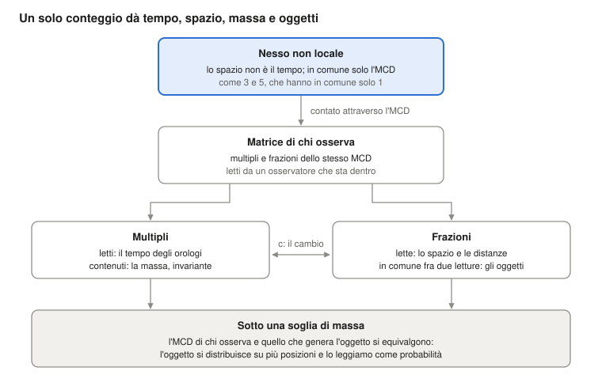

Chi fa rispettare le leggi della fisica? Nessuno, se la materia è la relazione stessa
Ugo Lanciano · Ricercatore indipendente, Locri · ORCID 0009-0008-7618-9635
Versione 2.68.1, 2026-10-26 · Archiviato su Zenodo: 10.5281/zenodo.23672394 · Licenza CC BY 4.0 · Sviluppato con l'aiuto di assistenti IA, come dichiarato nel record.
Il PDF della versione per studenti è in inglese: PDF, versione per studenti.
Percorso di lettura: Fondamenti: perché le leggi valgono · dopo: MM 2.40.2
Versione per studenti del record MM 2.68.1 (DOI 10.5281/zenodo.23672394), scritta con un assistente IA dal testo archiviato; il testo archiviato resta su Zenodo.
Ugo Lanciano · ORCID 0009-0008-7618-9635 · Mathematical Materiality (MM) 2.68.1 · testo archiviato del 26 ottobre 2026
Di che cosa parla. Questo testo presenta Mathematical Materiality (MM), un quadro che legge la fisica a partire dalle relazioni. Mostra l'idea di fondo, la mette alla prova su un orologio e dice come il quadro legge lo spazio, gli oggetti, la massa, la meccanica quantistica e il tempo. Alla fine riporta quattro obiezioni dei filosofi e le risposte dell'autore.
Come leggerlo. Il testo è pensato per chi studia fisica o filosofia. Ogni parola tecnica è spiegata la prima volta che compare. Le parole proprie di MM sono raccolte anche nel glossario in fondo. Come è stato fatto il lavoro (registrazioni, controlli, file) è detto nell'ultima sezione.
La domanda: chi garantisce le leggi della fisica?
Le leggi della fisica valgono ovunque e sempre. Un elettrone qui e un elettrone in una galassia lontana seguono le stesse regole. Eppure nessuno le fa rispettare: non c'è un vigile della natura. Che cosa, allora, le garantisce?
Mathematical Materiality (MM) risponde così: la materia non obbedisce a una relazione, la materia è la relazione. Questo testo espone la tesi. Poi la esegue su un orologio, con due premesse dichiarate. Infine mostra come il quadro legge lo spazio, gli oggetti, la massa, i quanti e il tempo.
L'idea in tre punti.
- Le leggi non hanno un guardiano. Una cosa che le violasse non sarebbe disobbediente: sarebbe un'altra cosa.
- Non c'è un mondo dietro le relazioni. Il mondo che vediamo è la rete di relazioni, letta da dentro.
- La matematica funziona sul mondo perché è la forma di una relazione del mondo, liberata nella mente.
Le due risposte classiche. Alla domanda ci sono due risposte tradizionali. Tutte e due lasciano un abisso fra la regola e la materia.
- La prima mette la legge in un «cielo di forme», un mondo di idee separato dalle cose, come in Platone. Allora non si capisce come la legge tocchi la materia.
- La seconda mette la legge nel nostro linguaggio: le leggi sarebbero descrizioni fatte da noi. Allora non si capisce come il linguaggio indovini il mondo.
C'è poi un'idea più recente: l'universo sarebbe una simulazione al computer. Questa ipotesi mette un programmatore al posto del cielo di forme. Vazza (2025) ha stimato che nessuno potrebbe pagare l'energia necessaria a una macchina che simuli l'universo.
Il Grande Rovesciamento. MM non getta un ponte sopra l'abisso: dice che l'abisso non c'è. Nel quadro questa mossa si chiama Grande Rovesciamento. La scienza l'ha già fatta cinque volte. Cinque cose sembravano sostanze e si sono rivelate rapporti:
- il calorico, il fluido che si pensava portasse il calore da un corpo all'altro;
- il flogisto, la sostanza che si pensava uscisse dai corpi quando bruciano;
- la forza vitale, che si pensava distinguesse la materia viva da quella non viva;
- l'etere, il mezzo in cui si pensava viaggiasse la luce;
- il chilogrammo campione di Parigi, il cilindro di metallo che per molto tempo è stato il chilogrammo stesso; oggi il chilogrammo è definito da un rapporto legato alla costante di Planck.
Ogni volta il mondo è rimasto identico. MM applica la stessa mossa alle ultime due voci: la materia e la legge.
Le parole del quadro. Otto parole tornano in tutto il testo. Qui ne basta il senso; ognuna è ripresa dove serve e nel glossario in fondo.
- Nesso: il legame di partenza fra due termini distinti. L'esempio di riferimento è il legame fra i numeri 3 e 5.
- Non locale: non collocato nello spazio e nel tempo. È un senso «pregeometrico», cioè che viene prima della geometria. Non vuol dire azione a distanza (§1).
- MCD: il massimo comun divisore, cioè la sola parte che i due termini hanno in comune. Per 3 e 5 è 1.
- Copie: le ripetizioni dell'unità comune quando il nesso viene contato. Il 3 contiene tre copie dell'1, il 5 ne contiene cinque.
- Matrice: l'insieme dei multipli e delle frazioni dell'MCD, letto da chi sta dentro. Qui «matrice» non vuol dire una tabella di numeri dell'algebra lineare. I multipli appaiono come tempo, le frazioni come spazio.
- Diffrazione: il modo in cui la matrice di chi osserva si divide in frazioni per dare un oggetto.
- Registro: ciò che un osservatore ha raccolto. Nei conti è la traduzione, scelta dall'IA, della matrice di chi osserva.
- Traduzione dell'IA: il modo in cui una frase dell'autore diventa una grandezza che si può calcolare. È una scelta, e il testo la segnala. Un esito che dipende da una traduzione riguarda quella traduzione, non la premessa.
Le premesse esplicative (IA). Nel testo compaiono anche alcune «premesse esplicative (IA)». Sono ponti proposti dall'intelligenza artificiale fra una frase dell'autore e la sua traduzione in un conto. L'autore li ha accettati nel testo il 26 ottobre. Non sono tesi dell'autore, e gli lasciano domande aperte (§10).
1. Il punto di partenza: due termini diversi e la sola cosa che hanno in comune
Le premesse filosofiche di MM stanno in cinque frasi. Hanno la forma logica del rapporto fra 3 e 5. Sono i postulati di MM, come quelli da cui Einstein partì per la relatività: non si dimostrano, si valutano dalle conseguenze.
Un richiamo di aritmetica. Due numeri interi sono primi fra loro quando non hanno divisori comuni oltre l'1. 3 e 5 sono primi fra loro. 6 e 9 non lo sono: hanno in comune il 3. Il massimo comun divisore (MCD) è il numero più grande che divide tutti e due. Il minimo comune multiplo (MCM) è il numero più piccolo che è multiplo di tutti e due. Per 3 e 5, l'MCD è 1 e l'MCM è 15.
Le cinque premesse:
- All'inizio c'è una differenza. Non c'è una cosa: c'è una differenza. A è diverso da B.
- Esistere è reciproco. Due enti esistono l'uno per l'altro solo attraverso ciò che hanno in comune. Senza nulla in comune non si potrebbero nemmeno dire diversi.
- Due enti senza altro in comune sono primi fra loro. A due enti di partenza non si attribuisce nulla, se non il fatto di essere due enti distinti: l'essere-due. Allora non hanno in comune parti composte: sono primi fra loro, come 3 e 5. Una parte comune più grande, come il 3 fra 6 e 9, sarebbe un terzo ente, e chiederebbe una ragione in più.
- L'unità comune si conta. In comune resta solo l'unità: MCD(3, 5) = 1. Per essere di tutti e due, l'unità deve contarsi in ciascuno: tre volte nell'uno e cinque nell'altro. Ciò in cui qualcosa si ripete ha parti, posizioni, distanze: è diventato locale, cioè collocato nello spazio e nel tempo.
- Le copie sono la stessa unità. Tre copie dell'unità sono la stessa unità contata tre volte. Fra due copie della stessa cosa non c'è distanza. Così il mondo locale porta dentro di sé, travestito da numero, il legame senza distanza da cui è partito.
Il primo nesso: spazio e tempo. Il primo nesso è quello fra spazio e tempo. Nella sua fase non locale spazio e tempo sono termini senza misura. C'è solo una distinzione logica: lo spazio non è il tempo. I due condividono soltanto il loro MCD. Quando vengono contati, diventano lo spazio e il tempo che misuriamo. Questa fase non è un livello lontano: è presente in ogni luogo e in ogni istante.
Quattro tratti del nesso. Il rapporto fra 3 e 5 ha quattro tratti, e sono i tratti del nesso.
- Nessun intermediario. 3 e 5 sono legati dall'1 senza un numero «in mezzo» che porti il legame. «Non locale» vuol dire questo: la relazione non sta in un luogo né in un istante, e non percorre un tragitto.
- I termini non vengono prima del rapporto. L'1 non è un mattone che aspettava di essere usato. Compare come l'unica cosa che i due hanno in comune.
- Contare fa lo spazio e il tempo. Il minimo comune multiplo, 15, contiene il 3 cinque volte e il 5 tre volte. Nella matrice che nasce dal conteggio i multipli appaiono come tempo e le frazioni come spazio. Quando si combinano più conteggi (§2), il tempo è la loro crescita comune e lo spazio la loro dispersione, cioè quanto i singoli conteggi si discostano l'uno dall'altro.
- Il conteggio conserva il nesso. MCD × MCM = 1 × 15 = 3 × 5. Comunque si conti nel mondo locale, il prodotto resta quello del rapporto di partenza.
Premessa esplicativa (IA): perché i numeri. I numeri non sono grandezze dello spazio e del tempo: nella fase non locale spazio e tempo non hanno misura. 3 e 5 sono la forma aritmetica di una situazione logica: due termini distinti che hanno in comune soltanto un'unità. Il conteggio entra con la premessa 4. Ciò che è comune, per essere di tutti e due, deve comparire in ciascuno; e comparire più volte è già contare. Che i due conteggi siano diversi segue dalla premessa 1: due termini uguali sarebbero uno solo. Un caso concreto si vede nel modello dell'orologio (§2). Lì il passo a riposo (1, 1) non distingue le due direzioni della luce. L'asimmetria fra due conteggi primi fra loro, come (3, 5), è invece ciò che viene letto come moto.
La lettura dell'IA su tempo e spazio. Sull'unità comune si possono fare due operazioni: moltiplicarla e dividerla. La moltiplicazione dà una successione ordinata di totali che crescono: 1, 2, 3 e così via. La divisione dà parti distinte di un totale che resta lo stesso. Letta da dentro, la prima è ciò che chiamiamo tempo, la seconda ciò che chiamiamo spazio. Tempo e spazio non vengono prima del conteggio: sono i nomi fisici dell'accumulo e della partizione della stessa unità.
Le parole dell'autore. L'autore lo dice così (10 ottobre): «esiste un gradino sottostante della realtà dove uno strato non locale di logica materiale ha in sé le caratteristiche per generare il gradino di spazio e oggetti sovrastante». L'errore comune, aggiunge, è partire da uno spazio oggettivo come elemento necessario. Nel volume MM 2.30 questo è il programma pregeometrico: un programma in cui la geometria dello spazio non è il punto di partenza, ma deve uscire dal quadro. Le sezioni che seguono dicono quanta parte ne è stata eseguita.
Che cosa vuol dire «non locale»
La non località è il fondamento del quadro. In filosofia della fisica la parola ha almeno quattro sensi. MM ne usa uno, ne ricava un secondo come conseguenza ed esclude gli altri due.
Un richiamo: il teorema di Bell. Il teorema di Bell (1964) riguarda due particelle preparate insieme e poi misurate lontano l'una dall'altra. Bell mostrò che certe correlazioni fra le misure non si possono riprodurre se valgono insieme tre ipotesi:
- ogni sistema porta con sé proprietà proprie, che le misure rivelano (separabilità);
- nessuna influenza viaggia più veloce della luce;
- chi misura sceglie che cosa misurare in modo indipendente dallo stato della sorgente (indipendenza delle scelte di misura).
Gli esperimenti trovano proprio quelle correlazioni. Almeno una delle tre ipotesi, quindi, va lasciata cadere.
I quattro sensi di «non locale», e che cosa ne fa MM:
- Non collocazione (pregeometria). La relazione non sta in un luogo né in un istante. In MM: è il senso del quadro, confermato dall'autore il 13 ottobre.
- Non separabilità (olismo). Il sistema intero non si riduce all'unione di parti separate nello spazio, ciascuna con uno stato proprio. In MM: è una conseguenza della premessa. Le copie di un nesso sono la stessa unità contata più volte, non parti separate.
- Non località di Bell. Correlazioni che nessuna spiegazione con le tre ipotesi di Bell riproduce. In MM: le correlazioni misurate sono un dato. Delle tre ipotesi, la premessa lascia cadere alla radice la prima, la separabilità. Il modello del loop a mediazione locale (§5), in cui il legame va e torna lungo i coni di luce passando per la sorgente, lascia cadere la terza ipotesi: l'indipendenza delle scelte di misura dallo stato della sorgente. Nessuna influenza a distanza.
- Azione a distanza. Un'influenza o un segnale passa da un luogo a un altro più veloce della luce. In MM: è esclusa. Non ci sono segnali, e il tetto di Tsirelson è rispettato (§5).
Le parole dell'autore. Oltre alla frase del 10 ottobre, tre premesse dicono come il non locale entra nel mondo locale.
- Il 13 ottobre l'IA ha proposto di leggere «non locale» come «non collocato nello spazio e nel tempo». L'autore ha risposto: «sì, vale anche per la lettura».
- Il 24 settembre: «MCD originale è il passaggio dallo stadio non locale al [locale] della realtà […] la matrice nasce come diffrazione di MCD nello spazio e nel tempo come elementi separati».
- L'11 ottobre: «è la base non locale della realtà che forza il cosiddetto presente ad una parte parziale della matrice di cui fa parte l'osservatore; il legame non locale "accende" solo parte della matrice totale».
Premessa esplicativa (IA): in nessun luogo, presente ovunque. Ciò che non sta in nessun luogo non è «altrove»: non ha un dove. Nel mondo locale compare come copia. Per la premessa 5, ogni copia è la stessa unità contata un'altra volta. Per questo la fase non locale è presente in ogni luogo e in ogni istante, senza essere distribuita nello spazio: ogni luogo e ogni istante ne è una copia. Da qui segue la non separabilità. Due copie della stessa unità non sono due cose con stati propri: sono due letture dello stesso nesso.
Premessa esplicativa (IA): il passaggio e il presente. Nelle frasi dell'autore l'MCD originale fa da cerniera. Lì spazio e tempo, che erano solo distinti, trovano l'elemento comune. Allora il nesso comincia a contarsi e nasce la matrice, cioè il mondo locale. La fase non locale non resta un'origine lontana. Secondo la premessa dell'11 ottobre, seleziona dentro la matrice la parte «accesa»: il presente di chi osserva. E, per la risposta del 13 ottobre, il senso di «non locale» vale anche per la lettura. Tre domande restano aperte (§10): che cosa fa cominciare il conteggio, che cosa distingue la parte accesa dal resto, in che senso la lettura sia non locale.
Che cosa non si afferma. La fase non locale non trasmette segnali né influenze. Oggi non ha una firma sperimentale distinta: nel quadro è una premessa. Il suo ruolo è dare una ragione di due fatti. Il primo: le leggi sono le stesse ovunque (§7). Il secondo: i due capi di un sistema entangled sono un solo nesso (§5). Un sistema è entangled («intrecciato») quando due sue parti, anche lontane, non hanno stati separati: le misure sull'una sono correlate con quelle sull'altra.
I vicini. Altre idee somigliano a questa.
- Per David Bohm (1980) ciò che appare separato è avvolto in un intero indiviso, che lui chiama «ordine implicito».
- Per Mark Van Raamsdonk (2010) la connessione dello spazio viene dall'entanglement.
- La non separabilità come tesi distinta dalla località è di Don Howard (1985), che la ritrova in Einstein. È anche di Paul Teller (1986), con l'«olismo relazionale».
- Sul rapporto fra la non località di Bell e la relatività il riferimento è Tim Maudlin (2011).

Figura 1. I multipli e le frazioni dello stesso MCD, letti da chi sta dentro la matrice, sono il tempo e lo spazio. Quando sono contenuti o condivisi, sono la massa e gli oggetti. Le sezioni 2-6 seguono questo schema dall'alto in basso.
2. Un orologio fatto di 3 e 5: dal conteggio al tempo di Einstein
Il rovesciamento non è solo un'idea: è una procedura. Su un orologio, con due premesse dichiarate, si può eseguire fino al numero. Il risultato: l'orologio che conta copie segna il tempo proprio di Einstein.
Un richiamo di relatività. Il tempo proprio è il tempo segnato da un orologio che si porta con sé. La relatività ristretta dice che un orologio in moto segna meno tempo di uno fermo. Se l'orologio si muove con velocità v, il fattore è √(1 − v²), con v misurata in unità della velocità della luce. Si usa un diagramma dello spaziotempo, con il tempo in verticale e lo spazio in orizzontale: i raggi di luce sono rette inclinate. Fra due ticchettii successivi dell'orologio si può disegnare un rombo di luce, detto anche diamante causale. Lo delimitano i raggi di luce che partono dal primo ticchettio, uno verso destra e uno verso sinistra, e quelli che arrivano al secondo. I due lati del rombo, a e b, misurati lungo le direzioni della luce, sono i lati di luce del passo: le sue coordinate di cono di luce.
Il procedimento ha quattro passi.
- Togliere la sostanza. Si prende una grandezza che sembra una cosa, il tempo che scorre, e ci si chiede quale rapporto sia. In MM il tempo di un orologio viene dalle copie che conta.
- Scrivere il rapporto come una coppia. Un passo elementare è descritto dalla coppia dei suoi due lati di luce, a e b. Qui entra una premessa, chiamata B nel deposito MM 2.40: i due lati sono numeri interi primi fra loro, e il passo non si può dividere. Quando l'orologio è a riposo i due lati sono uguali e il passo è (1, 1); quando è in moto sono diversi, come (3, 5). Le copie nascono ai multipli comuni, e il rombo di luce contiene a × b = MCD × MCM celle.
- Combinare le due direzioni. Una seconda premessa, chiamata C: due direzioni opposte non si sommano, si moltiplicano. L'orologio segna √(a × b), la media geometrica dei due lati. Il laboratorio, che somma, misura (a + b)/2, la media aritmetica.
- Confrontare con la legge nota. Con 3 e 5 l'orologio segna √15 ≈ 3,873. Il laboratorio segna (3 + 5)/2 = 4. Il rapporto fra i due tempi è 0,968. Nel laboratorio il tempo del passo è (a + b)/2 e lo spostamento è (b − a)/2: la velocità è il loro rapporto, (5 − 3)/(5 + 3) = 2/8, cioè un quarto di quella della luce. Per quella velocità la relatività dà √(1 − 1/16) = 0,968: lo stesso numero.
Premessa esplicativa (IA): perché il prodotto e non la somma. Il quarto tratto del nesso dice che il conteggio conserva il prodotto. Le copie di un passo occupano a × b = MCD × MCM celle. La durata del passo va quindi misurata con un'operazione che conservi il prodotto. Si prende il prodotto ab, e la sua radice √(ab) per tornare alla scala di un solo conteggio. È come il lato del quadrato che ha lo stesso numero di celle del rettangolo a × b. Per esempio, un rettangolo 3 × 5 ha 15 celle, e il quadrato con 15 celle ha lato √15 ≈ 3,873. La somma a + b, invece, cambia quando cambia l'asimmetria fra i due lati.
Quali cambi di osservatore conservano il nesso. Passare a un osservatore in moto uniforme rispetto al primo vuol dire allungare un lato di luce di un fattore k e accorciare l'altro dello stesso fattore: a diventa ka e b diventa b/k. Così il prodotto ab = (ka)(b/k) non cambia. Il fattore k è quello del calcolo k di Hermann Bondi (1964): un modo di fare la relatività ristretta con soli segnali di luce, come impulsi radar, in cui k è il fattore Doppler relativistico. Qui k entra come la trasformazione che conserva il prodotto, non come un'ipotesi messa prima.
Il fattore di Einstein entra con la premessa C. Da lì in poi è un'identità, cioè un'uguaglianza sempre vera. La media aritmetica supera la geometrica, tranne quando i lati sono uguali. Il loro rapporto è sempre √(ab)/((a + b)/2) = √(1 − v²). È l'identità del calcolo k di Bondi (1964). Da qui Kevin Knuth e Newshaw Bahreyni (2014) ricavano la metrica di Minkowski e le trasformazioni di Lorentz. Sono la geometria dello spaziotempo della relatività ristretta e le regole per passare da un osservatore all'altro.
Posti assegnati o no. Il deposito MM 2.40 aggiunge una prova che tocca la filosofia dello spazio. Una terza premessa, chiamata A, dice che gli eventi non stanno su posti dati in anticipo. Nei conti le copie sono sparse a caso, in modo uniforme. Questa è un'ipotesi aggiunta: la premessa la motiva ma non la impone.
Premessa esplicativa (IA). La premessa A è il secondo tratto del nesso (§1) applicato agli eventi: i termini non vengono prima del rapporto. Posti dati in anticipo sarebbero termini che esistono prima delle relazioni. Sarebbero cioè il contenitore che il rovesciamento toglie.
La prova confronta due modi di leggere il tempo. Il primo legge la catena più lunga di copie: partendo dal primo vertice del rombo, salta da una copia all'altra andando sempre verso il futuro, dentro i coni di luce, e conta il numero più grande di salti con cui arriva all'ultimo vertice. Il secondo conta le copie moltiplicando i due lati, con √(ab).
- Con 200 000 copie sparse a caso, l'orologio che legge la catena più lunga segna √(1 − v²) entro l'1 %.
- Se invece le copie stanno su una griglia regolare, con posti fissi e istanti uguali per tutti (sincroni), la stessa catena dà la media aritmetica (a + b)/2, cioè il tempo assoluto di Galileo, che non rallenta con il moto. Se i posti sono fissi ma i tempi sono estratti a caso, il rallentamento supera quello di Lorentz del 7-29 %.
- Sulla stessa griglia, l'orologio che conta le copie moltiplicando i due lati ritrova invece Einstein, entro lo 0,43 %.
Per un orologio che legge catene di eventi, quindi, i posti fissati prima degli eventi fanno da riferimento privilegiato e rompono la relatività. Un orologio che conta copie ritrova la relatività anche sulla griglia.
Prima dei conti il deposito aveva scritto un criterio registrato: una regola fissata in anticipo per dire quando l'insieme delle prove, chiamate P1-P5, riesce. Il deposito dichiara che il criterio non è stato soddisfatto: una prova a v = 0,8 è uscita dalla tolleranza del 6 %.
Più di due lati: la regola delle coppie (MM 2.40.2, 25 ottobre). Se un orologio ha n lati contati, la premessa «direzioni opposte si moltiplicano» si può estendere in due modi. Per n = 2 i due modi coincidono.
- La regola del prodotto: l'orologio segna la media geometrica di tutti i lati.
- La regola delle coppie: si moltiplicano i lati presi a due a due, per tutte le coppie di lati diversi, e si sommano i prodotti: Q = Σ xᵢxⱼ. L'orologio segna √Q. Per esempio, con tre lati x, y e z si ha Q = xy + xz + yz.
Premessa esplicativa (IA): perché a coppie. Il nesso è una relazione fra due termini (premessa 1). Con più lati ogni coppia è un nesso, e la regola delle coppie somma i nessi. La regola del prodotto di n lati sarebbe invece una relazione fra n termini insieme, che le premesse non contengono.
Con la regola delle coppie la crescita comune dei lati è il tempo, e la loro dispersione è lo spazio. n lati danno un tempo e n − 1 direzioni di spazio, equivalenti nella forma. Si vede dall'algebra. Se m è la media dei lati, Q = [n(n − 1)·m² − Σ(xᵢ − m)²]/2. Il primo termine, la crescita comune, ha segno più: è il tempo. Il secondo, la dispersione dei lati attorno alla media, ha segno meno e n − 1 direzioni indipendenti, perché gli scarti dalla media sommano a zero: è lo spazio. È la forma della metrica di Minkowski, t² − x² − y² − z². Tre lati danno uno spaziotempo 2+1, cioè due direzioni di spazio e una di tempo. Quattro lati danno 3+1, come lo spaziotempo che osserviamo. La regola del prodotto, da tre lati in su, non ha trasformazioni di Lorentz.
Che cosa dicono i conti. Le prove sono state fatte su strutture costruite da quattro conteggi indipendenti.
- La regola delle coppie dà una dimensione dello spaziotempo di 3,92 ± 0,11, vicina a 4. Il valore è misurato sui sei intervalli che stanno quasi interi dentro la regione studiata, per evitare gli effetti del bordo; su tutti gli intervalli è 3,61. Un intervallo, qui, è la regione compresa fra due eventi, come il rombo di luce di un passo.
- Per il primo osservatore gli orologi in moto riproducono il rallentamento della relatività entro il 2 %: il rapporto fra valore misurato e valore atteso è 0,981 e 0,998. La regola del prodotto li sbaglia del 12 %.
- Due previsioni registrate non sono tornate: la dimensione stimata dalla catena più lunga (3,45) e il confronto fra due osservatori.
- L'isotropia delle strutture, cioè il fatto che tutte le direzioni siano equivalenti, non è stata provata.
- In tutto: 20 prove tornate, 4 no, 4 non valutabili.
Che cosa era già noto. L'algebra è nota. Sono le «cornici di direzioni di luce», insiemi di direzioni di luce usati come riferimento, di Zeeman (1964), Derrick (1981), Coll e Morales (1991). Knuth (2016) riporta che con catene coordinate una misura coerente esiste solo per due o quattro catene. La regola non dice quanti lati ci sono. Il quattro è un ingresso, scelto per accordarsi con lo spaziotempo osservato. La sezione seguente ne propone una lettura.
3. Quante dimensioni? Due da una regola, la terza dai dati
MM ammette le tre dimensioni dello spazio, come la fisica corrente, che le prende come un dato. L'autore lo dice così (25 ottobre): «MM ammette le tre dimensioni, è parimenti efficace per ora». Esistono argomenti noti sul perché lo spazio abbia tre dimensioni. Riguardano la stabilità delle orbite e la possibilità che esistano osservatori (Ehrenfest 1917; Tegmark 1997). Per esempio, Ehrenfest notò che con più di tre dimensioni le orbite dei pianeti non sarebbero stabili. Sono argomenti, non derivazioni.
Due direzioni da una regola. Una premessa del 24 ottobre dice: «MCD ha il descrittore spazio, il descritto tempo e se stesso». L'IA ha tradotto i tre aspetti come tre conteggi indipendenti. Con la regola delle coppie, tre conteggi danno un tempo e due direzioni di spazio. La prova sulle strutture costruite da tre conteggi ha dato una dimensione dello spaziotempo di 2,98 ± 0,05 (MM 2.40.2).
Premessa esplicativa (IA): descrittore e descritto. L'IA legge così le due parole dell'autore. Il descrittore è il punto di vista che legge; il descritto è ciò che viene letto. Lo spazio descrive, perché è dove la lettura colloca. Il tempo è descritto, perché è ciò che, letto, si accumula. L'MCD è il terzo aspetto perché la premessa 2 lo rende necessario: è ciò per cui i due esistono l'uno per l'altro, e non si riduce a nessuno dei due. Una premessa del 27 settembre ha la stessa struttura a tre: «top tempo, gli altri due spazio e specchio di se stesso».
Il presente è una superficie. Premessa del 25 ottobre: «il 3+1 che misuriamo lo misuriamo in una complicazione di matrice in MM, non nel presente fisico, dove 2+1 è l'immediato che esiste». Il 2+1 è la geometria dell'immediato, cioè di ciò che esiste nel presente. La terza direzione di spazio sta nel modo in cui le letture si compongono.
L'idea che il punto di partenza sia una superficie ha un precedente noto: il principio olografico ('t Hooft 1993; Susskind 1995). Dice che l'informazione contenuta in una regione si può scrivere sulla superficie che la racchiude, come in un ologramma. MM non ne riprende i conti.
Premessa esplicativa (IA): perché l'immediato si ferma a 2+1. L'immediato è il nesso letto in una volta, con i suoi tre aspetti e nient'altro. Un livello in più darebbe una terza direzione di spazio, e non un secondo tempo. Il motivo sta nella regola delle coppie. La crescita comune di tutti i conteggi resta sempre una sola, ed è il tempo. Ogni conteggio indipendente in più aumenta invece la dispersione, e aggiunge, per costruzione, una direzione di spazio.
La terza direzione dai dati. Perché un solo livello sopra l'immediato? L'autore risponde: «Perché così è fatta la matrice desunta dai dati» (25 ottobre). L'IA ha confrontato due modi di tradurre questo livello in più, in un lavoro esplorativo del 25 ottobre, non ancora depositato e non ancora verificato da un secondo sistema:
- ripetere l'immediato: una pila di copie della stessa superficie, come fogli uguali impilati. Lo spazio resta piatto.
- annidarlo per multipli: ogni livello dentro il precedente, come scatole una dentro l'altra. Lo spazio si curva dopo pochi passi, come una geometria iperbolica.
Una geometria iperbolica ha curvatura negativa: allontanandosi da un punto, lo spazio disponibile cresce più in fretta che in uno spazio piatto. Una sella ne dà un'idea.
La prova non serve a contare le direzioni di spazio: la costruzione le fissa a tre, aggiungendo un livello all'immediato 2+1. Serve a confrontare la forma, cioè la curvatura che ne risulta. Lo spazio osservato è piatto. Lo dice il parametro di curvatura Ω_k, che vale zero per uno spazio piatto. Le misure danno Ω_k = 0,0007 ± 0,0019. Vengono dal satellite Planck (risultati del 2018), che ha misurato la radiazione rimasta dall'universo primordiale, insieme alle oscillazioni acustiche dei barioni: tracce di antiche onde sonore nella distribuzione delle galassie, usate come un righello. I dati scelgono la pila. Resta un punto da controllare: che questo livello entri nella regola delle coppie come un quarto lato uguale agli altri tre. Solo così la terza direzione di spazio è indistinguibile dalle altre due, come chiede l'isotropia osservata.
Un risultato già noto. Che una gerarchia di celle annidate dia una geometria iperbolica è un risultato noto.
- In fisica, Brian Swingle (2012) legge le reti di rinormalizzazione dell'entanglement (MERA) come una versione discreta dello spazio anti-de Sitter, che è iperbolico. Una rete MERA descrive uno stato quantistico strato dopo strato, a scale sempre più grandi.
- In matematica, Mario Bonk e Oded Schramm (2000) mostrano che aggiungere a uno spazio le sue scale, come una direzione in più, dà uno spazio iperbolico: il «cono iperbolico».
La conclusione «i dati scelgono la pila» non poggia quindi solo sul lavoro non depositato.
La legge e la storia. Qui MM traccia un confine che interessa il filosofo. Nel quadro, con la regola delle coppie:
- ciò che segue dall'identità delle relazioni è legge: il fattore di Einstein, il tempo come crescita comune, lo spazio come dispersione;
- ciò che si legge dalla misura è storia: il numero dei livelli, il valore delle singole masse, l'intensità della forza forte.
Per le masse l'autore usa un'immagine: «è come se da una casa completa e finita si dovesse derivare la storia di un singolo mattone». Gli è stato chiesto quanto spesso, nel modello, la storia di un elettrone cambi direzione. Ha aggiunto: «la parola quanto spesso in sé non esiste, ma è legata alla storia del singolo mattone che stai prendendo in considerazione». MM non promette di dedurre tutto. Promette che ciò che si legge stia in un solo quadro, senza contraddizioni.
4. Oggetti e massa: ciò che legge chi osserva
Nel quadro di MM le frazioni del conteggio danno oggetti e distanze; i multipli danno tempo e massa. Due depositi del 24 ottobre, corretti il 25, hanno messo alla prova traduzioni di queste due tesi: MM 2.62 e 2.62.1 sugli oggetti, MM 2.64 e 2.64.1 sulla massa. Le versioni corrette segnalano i punti in cui una scelta dell'IA era stata presentata come un risultato.
Che cosa è un oggetto
La tesi dell'autore. Gli oggetti osservati sono autonomi nelle loro relazioni locali. Però sono legati a chi osserva da una diffrazione, in frazioni, della sua matrice. Sui due osservatori la premessa del 23 ottobre dice che la loro matrice, «pur non essendo globalmente uguale, è in larga percentuale uguale, tanto da legarsi alla stessa proiezione, ossia gli oggetti fisici in comune osservati». Questa frase il modello non l'ha messa alla prova.
Premessa esplicativa (IA): che cosa vuol dire «diffrazione». In MM «diffrazione» è un termine del quadro. L'IA lo legge per analogia con l'ottica. Un reticolo di diffrazione è una lastra con molte fenditure parallele. Divide un'unica onda di luce in «ordini»: fasci separati, ciascuno una frazione ben definita dell'insieme. Allo stesso modo la matrice di chi osserva, che è una sola, si divide in frazioni, e una frazione letta è un oggetto. Nell'ontologia dell'autore le matrici di due osservatori si sovrappongono in gran parte. Questo evita il solipsismo, l'idea che esista solo la mente di chi osserva, senza rimettere una sostanza dietro le relazioni. La traduzione che segue rende la sovrapposizione come parte comune di due registri. Non ricava però perché i due registri concordino.
I vicini. I più vicini vanno detti per primi.
- Il darwinismo quantistico di Wojciech Zurek. L'informazione su un sistema viene copiata molte volte nell'ambiente, per esempio nella luce che il sistema diffonde. Molti osservatori possono leggerla in modo indipendente e trovano lo stesso valore. Zurek parla di «esistenza relativamente oggettiva».
- La meccanica quantistica relazionale, in cui lo stato di un sistema è sempre relativo a un altro sistema, e i legami fra le prospettive di osservatori diversi (Adlam e Rovelli 2023).
Per quanto cercato, nessuno studio definisce però l'oggetto stesso come la parte comune dei registri di due osservatori.
La traduzione messa alla prova. È una scelta dell'IA. La matrice di chi osserva è resa dal suo registro. L'oggetto che due osservatori vedono è la parte comune dei loro registri. È ciò che ciascuno legge dal proprio registro, senza guardare quello dell'altro, trovando lo stesso valore dell'altro. In teoria dell'informazione questa grandezza si chiama parte comune di Gács e Körner. Il modello è quello del darwinismo quantistico. C'è una sorgente che può avere due valori. Ci sono molti «portatori» sparsi, come i fotoni diffusi, che copiano il valore della sorgente con qualche errore. E ci sono due osservatori, che raccolgono ciascuno un gruppo di portatori.
Gli esiti:
- Cade la lettura «l'oggetto è avere la stessa statistica». Due osservatori che lanciano ciascuno la propria moneta trovano la stessa statistica, metà testa e metà croce, ma non osservano lo stesso oggetto.
- Non conforme ai criteri, ma non esclusa, la lettura «l'oggetto è la materia condivisa», cioè l'idea che per vedere lo stesso oggetto due osservatori debbano raccogliere gli stessi portatori. Nel modello, infatti, due osservatori con 63 portatori ciascuno e nessuno in comune concordano già sul valore della sorgente, a meno di una parte su un milione.
- Compatibile la parte comune. Se le copie sono imperfette, la parte comune esatta è zero finché i registri non si confrontano. Allora si ammette una piccola probabilità di disaccordo, la tolleranza dichiarata δ = 10⁻⁶, con copie sbagliate una volta su dieci. La parte comune resta zero finché ciascun osservatore ha fino a 22 copie. Con 23 copie il disaccordo scende sotto δ, e compare di colpo l'oggetto intero. Con δ = 10⁻³ e δ = 10⁻⁹ i numeri corrispondenti sono 11 e 37 copie.
- Un oggetto con più valori arriva a gradini. Qui la sorgente può stare in dodici caselle; le copie sono sfocate e possono sbagliare di una casella; la tolleranza è la stessa. Con 82 copie i due osservatori concordano su quale metà delle caselle contiene l'oggetto; con 88 su quale terzo, con 91 su quale quarto; con 101 sulla singola casella, cioè sull'oggetto intero. Sono limiti inferiori, nella classe di letture provata.
La lettura proposta. L'oggetto non è una cosa data prima delle letture, né un'immagine privata: è ciò che due letture hanno in comune. La sedia non viene tolta dal modello: resta una parte della struttura, con uno stato proprio. Ciò che la tesi toglie è un oggetto comune in più, dato prima dei registri. Il deposito non ricava l'oggettività e non risolve il problema della misura. È la domanda di come, nella meccanica quantistica, una sovrapposizione di possibilità dia un solo esito osservato.
Che cosa è la massa
La tesi. Lo stesso conteggio è tempo quando viene letto, ed è massa quando è contenuto direttamente nella matrice del punto d'osservazione.
La fisica lega già massa e tempo.
- Ogni massa porta un ritmo: la frequenza di Compton mc²/h, dove m è la massa, c la velocità della luce e h la costante di Planck. Più un corpo è massiccio, più il suo ritmo è veloce.
- Tutti i corpi cadono allo stesso modo, di qualunque materiale siano, entro poche parti su 10¹⁵. È il principio di equivalenza.
Premessa esplicativa (IA). Un multiplo letto diventa una serie di eventi distinti: è il ticchettio di un orologio, cioè tempo. Un multiplo contenuto resta lo stesso in ogni lettura. Se chi osserva copia il corpo a ogni scatto, trova che quella parte non cambia. Ciò che cambia fra le letture è tempo; ciò che resta uguale è massa. Per questo la massa appare come un invariante, una grandezza che non cambia fra le letture. È la lettura che la traduzione M-i, qui sotto, mette alla prova.
Gli esiti:
- Cade la lettura «pesa il numero dei pezzi», cioè l'idea che pesi la somma delle masse dei pezzi presi uno per uno, senza l'energia che li tiene legati. Titanio e platino hanno legami diversi: con questa lettura cadrebbero con una differenza di 7,5 × 10⁻⁴. Il satellite MICROSCOPE, che ha confrontato la caduta di masse di prova di titanio e di platino, non vede differenze con una precisione di circa 10⁻¹⁵.
- Compatibili tre letture che trattano «contenuto» come proprietà del corpo. Coincidono con la fisica standard per identità o per costruzione. La prima è la massa come ritmo di Compton. La seconda è la massa di Komar, un modo della relatività generale di calcolare la massa di un corpo dal suo campo gravitazionale. La terza è la massa come tetto agli stati distinti: al più due per ciclo di Compton (Margolus e Levitin 1998). Il teorema di Margolus e Levitin dice che un sistema con una certa energia non può passare per stati del tutto distinti più in fretta di un certo ritmo.
- La traduzione M-i (25 ottobre) è la più vicina alle parole dell'autore. Chi osserva copia lo stesso corpo a ogni scatto del proprio orologio. Ciò che cambia fra le copie è il tempo letto. Ciò che resta uguale è il multiplo contenuto, e la sua grandezza è la massa. Fra osservatori in moto ciò che resta in comune è la massa invariante, quella che tutti gli osservatori trovano uguale.
La lettura che ne esce. La massa non è una sostanza chiusa nel corpo: è ciò che resta identico fra le letture. È la stessa idea con cui Eugene Wigner (1939) classificò le particelle: la massa come invariante delle trasformazioni fra osservatori. Tre limiti vanno detti. Nessuna traduzione dà oggi numeri diversi dalla fisica nota. Le letture compatibili non sono prove indipendenti. Nessuna massa singola viene ricavata.
Nel quadro oggetti e massa sono due facce dello stesso conteggio. Le frazioni lette in comune da due osservatori danno gli oggetti. I multipli contenuti e invarianti danno la massa.
5. La meccanica quantistica: dove nasce la probabilità
Lo stesso quadro che legge spazio, tempo, oggetti e massa ammette la meccanica quantistica. Non ne cambia le previsioni, ma propone dove nasce la probabilità. Il lavoro del periodo sta in tre premesse (13 e 22 ottobre), nei depositi MM 2.48 (14 ottobre) e 2.66 (25 ottobre) e nella versione 2.48.1 (26 ottobre).
Due richiami. La regola di Born dà le probabilità della meccanica quantistica: la probabilità di un esito è il quadrato del modulo della sua ampiezza, |ψ|². Il tetto di Tsirelson riguarda il test più usato del teorema di Bell, che combina quattro correlazioni in un solo numero. Se ogni sistema ha proprietà proprie e locali, il numero non supera 2. La meccanica quantistica arriva al più a 2√2: questo è il tetto di Tsirelson.
La non località senza segnali. Nell'entanglement due sistemi lontani restano correlati, senza che niente viaggi direttamente dall'uno all'altro. Per MM è la traccia della fase non locale del nesso, dove «non locale» vuol dire non collocato nello spazio e nel tempo. Se a ciascuno dei due capi le letture seguono la geometria degli stati quantistici con la regola di Born (la «geometria di Born»), nessuna correlazione supera il tetto di Tsirelson, 2√2. La misura più precisa dà 2,82759 ± 0,00051 (Poh et al. 2015). Il tetto lo mette la lettura locale, non lo strato non locale, e la non località del quadro è compatibile con gli esperimenti.
Premessa esplicativa (IA): la fase non locale e il loop. I due livelli fanno due lavori diversi.
- La fase non locale, premessa dell'autore, dice perché i due capi sono un sistema solo: sono due copie dello stesso nesso.
- Il modello del loop, traduzione dell'IA nella 2.48, mostra che le correlazioni misurate si riproducono senza influenze fuori dai coni di luce. Il cono di luce di un evento contiene tutti i punti che un segnale non più veloce della luce può raggiungere. Nel modello il legame passa per la sorgente, e niente va direttamente da un capo all'altro.
Nei termini del teorema di Bell, la premessa lascia cadere alla radice la prima ipotesi: la separabilità, cioè che ogni sistema porti con sé proprietà proprie. Il modello, scritto nei coni di luce, lascia cadere la terza: l'indipendenza delle scelte di misura. Nella lettura dell'IA non sono due scappatoie sommate, ma lo stesso fatto visto da due lati. Dalla fase non locale è l'unità dei due capi; nella lettura locale è la chiusura di un loop.
Il modello non rende superflua la premessa. Si può obiettare che, per fare dei due capi un sistema solo, basti l'origine comune nella sorgente. Ma nel loop il peso di un esito non viene dalla sola sorgente. Viene dalla chiusura dell'intera storia, andata e ritorno: nella 2.48 i futuri pesati con la chiusura del loop danno la regola di Born. Che quella storia chiusa sia una sola è ciò che la fase non locale nomina. Restano aperte due cose (§10): se questo aggiunga qualcosa all'origine comune, e se i due lati siano davvero lo stesso fatto.
La regola la decidono le copie. Premessa del 13 ottobre: «la regola la decide il numero e la correlazione reciproca delle copie del nesso». L'IA l'ha letta con Rafael Sorkin (1994).
Un richiamo. Nell'esperimento delle due fenditure la figura sullo schermo non è la somma delle figure date da ciascuna fenditura da sola. C'è un termine in più, l'interferenza, che dipende dalle coppie di fenditure: Sorkin la chiama interferenza di secondo grado. Con tre fenditure la meccanica quantistica non prevede nessun termine nuovo «a tre vie»: tutto si riduce alle coppie.
Nella lettura dell'IA la correlazione reciproca delle copie è l'interferenza di secondo grado: niente interferenza irriducibile a tre vie, come vuole la meccanica quantistica. Questo grado però non fissa da solo il quadrato |ψ|². Il conto che ne segue aggiunge ipotesi che la premessa non impone: solo coppie, e una matrice di Gram, cioè la tabella dei prodotti fra le copie prese a due a due. Sulla scacchiera della 2.40 una particella avanza a passi lungo le direzioni della luce, in un modello simile alla scacchiera di Feynman. A ogni passo una «moneta», cioè una piccola tabella di pesi, decide quanto pesa andare dritto e quanto svoltare. Le frange scure, dove i cammini si cancellano, compaiono solo con pesi non positivi per le svolte, cioè negativi o complessi. Una moneta con pesi reali, positivi e negativi, dà le stesse probabilità di quella con peso immaginario.
Il futuro sceglie il passato. All'autore è stato chiesto: «che cosa fa sì che una lettura venga scritta nel registro?». Ha risposto (13 ottobre): «è il futuro di una storia che sceglie il suo passato; quindi la risposta alla tua domanda è il loop». La lettura è nota: il formalismo a due tempi di Aharonov, Bergmann e Lebowitz (1964), l'interpretazione transazionale di Cramer (1986), la rassegna di Wharton e Argaman (2020). Sono letture retrocausali: un confine nel futuro concorre a fissare l'esito.
Che cosa dicono i conti:
- Un futuro che sceglie l'esito dà le frequenze di Born solo con certe regole per pesare i futuri: per esempio, pesando ogni futuro con la chiusura del suo loop, andata dalla preparazione al futuro e ritorno. Questa regola di peso, la «misura sui futuri», non si ricava dal modello: resta un postulato.
- Un modello del singoletto con mediazione locale riproduce le correlazioni con ogni legame dentro i coni di luce. Il singoletto è lo stato di due particelle con spin opposti usato negli esperimenti di Bell. Nel modello, il parametro fissato dalla lettura futura di un capo torna alla sorgente e va all'altro capo. La legge angolare, cioè come la correlazione dipende dall'angolo fra le due misure, è assunta. L'assenza di segnali osservabili vale solo con il peso di Born, come aveva già notato Argaman (2010).
- Con un peso diverso da Born, e aggiungendo un secondo legame (assunto), un bit potrebbe tornare nel passato di chi lo manda: un segnale mandato verso il proprio passato. Le storie coerenti diventerebbero improbabili quanto si vuole. Il passo da «improbabile» a «non può esistere» è un postulato dell'autore.
Premessa esplicativa (IA). Un peso diverso da quello di Born renderebbe le storie coerenti improbabili quanto si vuole. Escluderle come impossibili equivale a postulare, come fa l'autore, che il presente osservato esiga una chiusura coerente dei loop. È un argomento sulle condizioni del presente, e resta un postulato.
Il prezzo. Per un filosofo il prezzo è questo: le scelte di misura non sono indipendenti dallo stato, perché il futuro entra nella sua preparazione. MM si colloca fra le letture retrocausali con mediazione locale. Una correzione: la 2.48 corregge le versioni precedenti, che dicevano MM non locale nel senso del teorema di Bell.
Dove finisce il comportamento quantistico. Premessa del 22 ottobre: sotto un certo livello di massa, l'MCD del punto d'osservazione e l'MCD della diffrazione che genera l'oggetto si equivalgono, come in uno specchio. L'oggetto allora non sta più in un solo punto, e lo osserviamo come probabilità.
Premessa esplicativa (IA): due celle a confronto. L'MCD uguale a 1 è quello del nesso di partenza. L'IA legge l'MCD di un conteggio locale come la sua unità: la cella più piccola che distingue, cioè la sua risoluzione. Chi osserva legge con la sua cella; l'oggetto è generato, nella diffrazione, con la sua. Finché la cella di chi osserva è più fine di quella che genera l'oggetto, la lettura fissa l'oggetto in un posto. Quando le due celle si equivalgono, la lettura non ha una parte più fine con cui fissarlo, e l'oggetto si distribuisce su più posizioni. È come misurare un granello con un righello le cui tacche sono grandi quanto il granello.
Il tentativo di dare un numero alla soglia (MM 2.66). Il deposito 2.66 ha cercato di dare un numero alla soglia, con letture dei due MCD scelte dall'IA. Per la lettura della distanza, cioè della posizione, il limite non risulta una massa sola, ma un rapporto. È la grandezza da distinguere confrontata con la cella delle copie che la distinguono, insieme al numero delle copie. Per esempio, nella decoerenza la cella è la lunghezza d'onda della luce diffusa dall'oggetto, e le copie sono i fotoni diffusi. Coincide con la decoerenza della fisica nota, ora scritta come regola del quadro. La decoerenza è il processo per cui un oggetto, scambiando informazione con l'ambiente (luce, molecole d'aria), perde in pratica i segni della sovrapposizione.
- Non seguono dai dati due letture dell'IA. La prima lega la soglia all'accelerazione galattica: ma ammassi di sodio da oltre 170 000 unità di massa atomica danno ancora figure di interferenza (Pedalino et al. 2026). La seconda pone la soglia alla massa del protone, circa 1 unità di massa atomica: ma un atomo intero di cesio resta in sovrapposizione per 70 secondi (Panda et al. 2024).
- Restano possibili, e oggi non provabili, altre soglie: alla massa di Planck (22 microgrammi) o a m_P/√2; alla massa dell'osservatore (70 kg); del tipo di Diósi e Penrose, in cui le sovrapposizioni di masse grandi finiscono da sole. Una previsione è registrata con scadenza 31 dicembre 2035.
Si propone di leggere il confine fra quantistico e classico dove un oggetto diventa la parte comune dei registri. È lo stesso concetto di oggetto della sezione 4.
La regola di Born dal conteggio delle copie (26 ottobre). L'immagine dell'autore: «se dovete descrivere un 10 per mezzo di un numero 1, sarete costretti a distribuire il descrittore 1 in 10 spazio tempi del numero 10». L'IA l'ha tradotta così: l'ampiezza si divide in tante copie della stessa grandezza («di uguale modulo»), e si conta quante copie cadono in ciascun esito. Sulla scacchiera della 2.40 questa traduzione dà esattamente |ψ|² in tutti i 66 rapporti razionali provati, cioè le frazioni con denominatore fino a 12. Servono tre ipotesi dichiarate:
- che le probabilità esistano;
- che copie di uguale modulo contino allo stesso modo: è la traduzione matematica, fatta dall'IA, della premessa del descrittore distribuito;
- che le probabilità si sommino su copie distinte e facciano 1 in totale.
Premessa esplicativa (IA). Se un 10 si descrive distribuendo l'1 su dieci posti, in ciascun posto c'è lo stesso 1 (premessa 5). L'ipotesi 2 traduce questa identità in probabilità: l'assenza di differenze fra le copie diventa uguale probabilità delle copie di uguale modulo. È un'assunzione dichiarata, non una deduzione.
Per i rapporti irrazionali serve anche la continuità. La costruzione è analoga a quella di Zurek (2005), con una differenza: qui l'uguale probabilità è dichiarata come premessa, non ricavata. È proprio il passo che Schlosshauer e Fine (2005) contestano alla derivazione di Zurek. Perché proprio il quadrato, e non un'altra potenza? Fra gli esponenti provati, la moneta della 2.40 lascia invariata, passo dopo passo, solo la somma dei quadrati dei moduli delle ampiezze. Il quadrato viene da lì, insieme alle ampiezze complesse e alla sovrapposizione lineare. La regola di Born non è quindi ricavata senza ipotesi, ma ha un posto preciso nel quadro.
Che cosa si può dire oggi. Oggi nessun esperimento distingue MM dalla meccanica quantistica standard. Se la soglia risultasse una massa, MM diventerebbe una modifica controllabile della teoria, come i modelli di collasso, in cui le sovrapposizioni si interrompono da sole. Il suo contributo attuale è un luogo: la probabilità nasce dove la matrice di chi osserva e la diffrazione dell'oggetto si equivalgono.
6. Il tempo: un presente profondo e una direzione che cresce
In MM il tempo non scorre dentro un contenitore. Il presente ha una profondità, e il passato è ciò che il presente contiene. La direzione del tempo è, per l'autore, la crescita delle relazioni nella matrice di chi osserva.
Due tempi. Premessa del 24 settembre: «il tempo fermo del presente può essere profondo fino a 13 miliardi di anni, poi c'è il tempo che percepiamo passare». Il primo tempo è la profondità, cioè l'insieme delle letture accumulate. Il secondo è il ritmo locale degli orologi.
L'inizio come lettura presente. Premessa del 20 ottobre, in parafrasi: il vero tempo è il tempo della matrice, dove il nesso iniziale è presente ovunque. Ciò che chiamiamo inizio dell'universo è una diffrazione comune, che non esiste oggettivamente nel presente di chi osserva.
Stati, non epoche. L'autore corregge chi ragiona per epoche. A una domanda sui «primi minuti» dell'universo ha risposto: «ma i primi minuti esistono per MM? tu pensi ancora per oggetti». Le domande vanno poste per stati della materia e per cambi di organizzazione, non per luoghi ed epoche.
Il deposito MM 2.58 (21 ottobre) tratta così il deuterio primordiale, l'idrogeno pesante che, per la cosmologia standard, si formò nei primi minuti. Le abbondanze misurate oggi sono letture presenti. Si calcolano con la nucleosintesi standard, la teoria di come si formarono i primi nuclei. Così calcolate, fanno da ingresso a una catena di conti (MM 2.58) che arriva fino alle galassie, e che regge il confronto con i dati quanto il modello standard. Nel quadro le abbondanze sono letture del presente. Il racconto dei «primi minuti» resta il modo con cui la fisica nota rende conto di quelle letture.
La direzione del tempo. Premessa del 24 ottobre: la direzione è «l'ampliamento del numero di relazioni legate a rete dentro la matrice dell'osservatore». La fisica nota lega la freccia del tempo al calore, che va dal caldo al freddo. Esistono però esperimenti in cui, con correlazioni iniziali fra le parti, il calore va dal freddo al caldo (Micadei et al. 2019).
L'autore ha avvertito di non legare le due frecce: «la direzione del calore potrebbe in certi casi essere contraria alla complicazione della matrice». Nella 2.64.1 l'IA ha tradotto la matrice come un registro di celle di memoria che partono vuote e copiano una parte osservata. La memoria si conta in bit: un bit è l'informazione di una risposta sì o no. In ogni banco di prova ci sono istanti in cui registro e calore vanno in versi opposti.
- Il banco di Micadei riproduce quell'esperimento: due spin, correlati all'inizio e a temperature diverse. In tutti i 2198 istanti in cui il calore va all'indietro, dal freddo al caldo, il registro porta fra 0,365 e 1,166 bit. La memoria cresce mentre il calore torna indietro.
- Dove invece la memoria è la stessa correlazione fra i due spin che il calore consuma per andare dal freddo al caldo, la memoria scende ogni volta che il calore torna indietro.
Ne esce una separazione: la freccia del registro e la freccia del calore possono andare in versi opposti. I precedenti sono la «gerarchia di frecce» di Jennings e Rudolph (2010) e l'inversione del calore senza inversione della freccia di Latune et al. (2019). Nessuna lettura dà oggi previsioni diverse dalla fisica nota.
Una domanda. Come stanno insieme tre frasi dell'autore? La prima è il registro come proiezione del passato: «c'è solo il passato» (24 settembre). La seconda è la direzione del 24 ottobre. La terza è il loop in cui il futuro sceglie il passato. La domanda è ripresa nella sezione 10, ed è chiusa in questa versione, la 2.68.1.
Premessa esplicativa (IA): quattro livelli. Le tre frasi possono parlare di livelli diversi del quadro, sopra uno strato che non ha tempo:
- Lo strato non locale. Spazio e tempo vi sono solo distinti, senza misura: non c'è prima né dopo.
- La singola lettura. Quale lettura viene scritta si decide nella chiusura del loop fra la preparazione e l'esito futuro: «il futuro sceglie il passato». Nel modello locale dell'IA questo avviene tramite un legame che va e torna lungo i coni di luce. Riguarda il modo in cui una lettura diventa scritta, non ciò che è già scritto.
- Il registro scritto. Ciò che è scritto è passato. Un registro non ha direzioni spaziali da cui le letture arrivano, ha solo profondità: «c'è solo il passato».
- La crescita del registro. Il numero di relazioni scritte aumenta: è la direzione del tempo, «l'ampliamento delle relazioni».
In questa lettura le frasi non si contraddicono. Il loop decide che cosa entra nel registro; il registro contiene solo passato; il suo crescere è la freccia. L'autore ha accettato questa lettura il 26 ottobre. Il conto che la traduce è qui sotto.
Il conto unico (novità della versione 2.68.1). L'IA ha tradotto la lettura su quattro livelli in un solo modello. I criteri sono stati registrati prima dei conti. Il modello mette insieme quattro pezzi:
- il loop della 2.48 sceglie l'intera storia di letture;
- il registro della 2.64.1 riceve gli esiti in celle che partono vuote;
- «c'è solo il passato» diventa una condizione precisa, che esclude segnali dal futuro verso il passato: la statistica delle prime letture deve restare la stessa sia che la storia si fermi lì sia che continui con altre letture;
- la direzione è la crescita del registro, contata in bit.
I banchi di prova sono due: la scacchiera della 2.40, con tre letture, e i due spin del banco di Micadei, con quattro letture e il calore.
Gli esiti principali. Quando il futuro sceglie con la chiusura del loop (la regola della 2.48 che dà Born), le tre frasi non si contraddicono.
- Le prime letture hanno la stessa statistica sia che la storia si fermi lì sia che continui. Le celle già scritte, infatti, non cambiano per costruzione.
- Il registro cresce a ogni lettura e dà le frequenze di Born.
- Nel banco del calore il registro cresce mentre il calore va al contrario, sia nella media sia lungo la storia più probabile.
Due esiti più deboli del previsto.
- Sulla scacchiera il registro cresce meno della soglia fissata prima: 0,29 bit alla seconda lettura e 0,17 alla terza, contro 0,5. Il motivo è che la preparazione rende quasi prevedibili le letture dopo la prima.
- «Solo passato» non seleziona da solo la regola di Born. Delle quattro regole provate, solo la chiusura del loop lo rispetta esattamente. Alla soglia fissata prima, però, lo viola in modo netto soltanto la regola più estrema, in cui il futuro sceglie in modo deterministico. E lo viola solo in una delle due traduzioni del «peso del futuro»: quella usata nella 2.48, che dà a ogni storia una sola componente del futuro (la convenzione «vettore»). Nell'altra traduzione, che somma le componenti dell'ambiente della storia (la convenzione «blocco»), nessuna delle quattro regole supera la soglia. I numeri del futuro a caso e del futuro deterministico dipendono da questa traduzione; quelli della chiusura del loop no.
Che cosa sceglie il futuro. All'autore è stato chiesto se il futuro scelga l'intera sequenza di letture in un solo loop chiuso, come nel conto, o ciascuna lettura per conto suo. Ha risposto il 26 ottobre, dopo il conto: «come nel conto perché la piramide concettuale è determinata dalla direzione imposta al suo vertice». La traduzione adottata nel conto, in cui il futuro sceglie la storia intera, coincide con la sua risposta.
7. Perché nessuno deve far rispettare le leggi
Se si accetta la premessa, il rovesciamento dà una ragione a tre fatti che le risposte classiche lasciano senza ragione: le leggi non hanno un guardiano, valgono ovunque e sono matematiche. Ne seguono tre conseguenze: l'universo non ha bisogno di una macchina; la velocità della luce non ha bisogno di una giustificazione esterna; il mondo non sparisce.
Le leggi non hanno bisogno di un guardiano. 3 e 5 non «obbediscono» al fatto di avere MCD 1: sono quel fatto. Con un divisore comune non sarebbero un 3 e un 5 disobbedienti: sarebbero altri numeri. Se la materia è la relazione, una cosa che violasse la legge non verrebbe punita: non ci sarebbe. La necessità delle leggi diventa necessità d'identità, come in aritmetica.
Le leggi valgono ovunque e sempre. Per la risposta classica l'universalità delle leggi è un fatto bruto: un fatto che c'è e basta, senza una ragione. Nel rovesciamento ogni «qui» e ogni «adesso» è una copia dello stesso nesso, e fra due copie della stessa unità non c'è distanza. Due luoghi non possono avere leggi diverse per la stessa ragione per cui due copie dell'1 non sono due unità diverse. L'universalità delle leggi è la non località del nesso vista da dentro il mondo locale. L'argomento riguarda le leggi. I valori che la sezione 3 chiama storia, come le singole masse, vengono dalla misura.
Le leggi sono matematiche. Eugene Wigner (1960) parlava di «irragionevole efficacia» della matematica nelle scienze naturali. Nel rovesciamento la matematica funziona sul mondo perché è la forma liberata di una relazione del mondo. È la lettura dell'IA della terza risposta dell'autore (sezione 10). Il mondo locale è fatto di conteggi, e contare è aritmetica.
Nessuna macchina. L'universo segue regole esatte, fatte di conteggi, ovunque e in ogni istante. Ma nessuna macchina le esegue e nessun programmatore le ha scritte. Una struttura di relazioni non ha bisogno di essere calcolata per esistere. Che una simulazione non debba essere eseguita l'aveva già osservato Max Tegmark (2008). Vazza (2025) ha stimato che eseguirla su una macchina richiederebbe risorse che le leggi dell'universo non consentono. L'universo si comporta come una simulazione senza esserlo.
La velocità della luce come cambio. In relatività la velocità della luce è un principio di partenza. In MM è il cambio fisso fra i multipli e le frazioni dello stesso MCD, cioè quanto spazio vale un passo di tempo. Funziona come il cambio fra due monete. Superarla vorrebbe dire, per qualche osservatore, percorrere spazio senza contare tempo, cioè uscire dal mondo locale.
Questo cambio è un relativo necessario: dentro il sistema diventa un'ipotesi assoluta, uguale per tutti e insuperabile. Fuori dal sistema non ha giustificazione, perché fuori non c'è un altro termine a cui riferirlo. Chiederne la ragione da fuori è come chiedere che cosa c'è a nord del Polo Nord.
Il mondo non sparisce. Nei cinque rovesciamenti della storia il mondo è rimasto identico: è sparita la sostanza, non le cose. Lo stesso vale qui. La tesi non è che il mondo non esista. È che non c'è un mondo dietro le relazioni: il mondo che vediamo è la rete di relazioni letta da dentro.
8. MM fra le altre idee: vicini e differenze
MM è una forma di realismo strutturale ontico: la tesi che al livello fondamentale ci siano strutture, cioè relazioni, e non cose con proprietà proprie. È vicina alla variante moderata. Indica quale struttura c'è e la esegue con l'aritmetica. Quasi ogni sua tesi ha un vicino noto. L'elenco li nomina per primi e dice che cosa MM condivide e dove se ne separa.
Il più antico è nato sulla stessa costa ionica da cui scrive l'autore. Pitagora visse e insegnò a Crotone dal 530 a.C. circa. A Crotone è legato anche Filolao, il primo pitagorico che pubblicò un libro.
- Pitagorismo (Pitagora a Crotone, 530 a.C. circa; Filolao, frammenti 1 e 4; Aristotele, Metafisica I 5). Che cosa sostiene: l'ordine del mondo è composto di illimitati e di limitanti; tutto ciò che si conosce ha numero; per Aristotele, i pitagorici dicevano che le cose sono numeri. In comune con MM: il numero come struttura del mondo, non solo come misura. Dove MM se ne separa: MM non dice che le cose sono numeri, e nemmeno i frammenti di Filolao lo dicono. La materia è la relazione, e il numero è la forma del nesso fra due termini primi fra loro.
- Realismo strutturale ontico (Ladyman 1998; Ladyman e Ross 2007). Che cosa sostiene: al livello fondamentale ci sono solo strutture; nella forma più cruda, «non ci sono cose, la struttura è tutto ciò che c'è». In comune: le relazioni vengono prima delle cose. Dove se ne separa: MM dice quale struttura: due termini primi fra loro, con l'MCD come unica parte comune. Termini e relazioni nascono insieme, come nella forma moderata di Esfeld e Lam (2008).
- Non collocazione e non separabilità (Bohm 1980; Howard 1985; Teller 1986; Van Raamsdonk 2010). Che cosa sostiene: ciò che appare separato è avvolto in un intero indiviso; il tutto non si riduce alle parti; la connessione dello spazio viene dall'entanglement. In comune: il fondamento non sta nello spazio, e i capi di un sistema non sono parti separate. Dove se ne separa: in MM l'intero non è uno stato quantistico né un ordine fisico dato in partenza. È il nesso fra spazio e tempo, nella forma aritmetica di due numeri primi fra loro, contato attraverso l'MCD (§1).
- Universo matematico (Tegmark 2008). Che cosa sostiene: la realtà fisica è una struttura matematica; esistenza matematica ed esistenza fisica coincidono, quindi ogni struttura è un universo (il «livello IV» di Tegmark). In comune: nessuna macchina: una struttura non va eseguita per esistere. Dove se ne separa: esiste solo la nostra struttura. Le altre sono distinzioni mentali appoggiate a essa, e non c'è una vista dall'esterno (§10).
- Leggi che necessitano (Armstrong 1983). Che cosa sostiene: le leggi sono relazioni di necessitazione fra universali, cioè fra proprietà generali, e sono contingenti: avrebbero potuto essere diverse. In comune: le leggi non sono semplici regolarità. Dove se ne separa: in MM non c'è una relazione in più che agisce sulla materia: la necessità è d'identità.
- Leggi che non governano (Beebee 2000). Che cosa sostiene: le leggi sono le regolarità che meglio sistemano i fatti; non governano nulla. In comune: nessun guardiano delle leggi. Dove se ne separa: per MM le leggi sono necessarie, non solo il miglior riassunto dei fatti.
- Leggi primitive (Maudlin 2007). Che cosa sostiene: le leggi sono un ingrediente primitivo del mondo, che non si riduce ad altro. In comune: le leggi non si riducono ai fatti. Dove se ne separa: MM non le prende come primitive: seguono da che cosa è il nesso.
- Essenzialismo disposizionale (Bird 2007). Che cosa sostiene: le leggi seguono dalle essenze delle proprietà e sono metafisicamente necessarie. Una disposizione è una tendenza ad agire in un certo modo, come la fragilità del vetro. In comune: è la posizione più vicina: necessità da ciò che i termini sono. Dove se ne separa: al posto delle disposizioni MM mette relazioni aritmetiche, e al posto delle proprietà il nesso.
- Spaziotempo emergente (Huggett e Wüthrich 2025). Che cosa sostiene: nelle teorie della gravità quantistica lo spaziotempo non è fondamentale. In comune: lo spazio non è il palcoscenico di partenza. Dove se ne separa: in MM è un programma. Dal conteggio escono il tempo e, con una traduzione dell'IA, due direzioni di spazio; la terza viene dai dati.
- Lo spaziotempo dai conteggi (Bondi 1964; Knuth e Bahreyni 2014). Che cosa sostiene: il tempo proprio è la media geometrica di due conteggi; ne seguono la geometria di Minkowski e le trasformazioni di Lorentz. In comune: l'identità fra media geometrica e aritmetica. Dove se ne separa: in MM i due conteggi sono lati di luce primi fra loro, e le copie non hanno posti assegnati (§2).
- It from bit (Wheeler 1990). Che cosa sostiene: ogni cosa fisica ha un'origine informazionale, nelle risposte sì o no. In comune: il mondo fisico come esito di distinzioni. Dove se ne separa: per MM l'acceso/spento (on/off) è la distinzione liberata della mente; quella fisica è scritta come spazio e tempo (§10).
- Darwinismo quantistico (Zurek 2009) e prospettive relazionali (Rovelli 1996; Adlam e Rovelli 2023). Che cosa sostengono: l'oggettività nasce dalle copie ridondanti nell'ambiente, o dai legami fra prospettive. In comune: l'oggetto come ciò su cui più letture concordano. Dove se ne separa: MM propone di leggere l'oggetto come la parte comune di due registri (§4).
- Retrocausalità (Aharonov, Bergmann e Lebowitz 1964; Cramer 1986; Wharton e Argaman 2020). Che cosa sostiene: un confine futuro concorre a fissare l'esito. In comune: il futuro sceglie il passato. Dove se ne separa: MM lega il peso di Born alla coerenza dei loop, come postulato dell'autore (§5).
- Collasso legato alla massa (Diósi 1987; Penrose 1996). Che cosa sostiene: le sovrapposizioni di masse grandi finiscono da sole. In comune: una soglia di massa del comportamento quantistico. Dove se ne separa: in MM la soglia è dove due MCD si equivalgono; per la distanza risulta un rapporto, non una massa (§5).
Ciò che è proprio di MM non è nessuna di queste tesi presa da sola. È la forma del nesso, due termini primi fra loro, e il fatto che una sola forma legga insieme leggi, spazio, tempo, massa, oggetti e probabilità.
9. Che cosa poggia su un conto e che cosa è una premessa
Questo documento contiene ventuno tesi. La tabella dice su che cosa poggia ciascuna. Le categorie sono sette:
- Premessa: un punto di partenza del quadro, che non si dimostra (sei tesi).
- Identità o teorema noto: un'uguaglianza o un teorema già dimostrati (due tesi).
- Conto registrato: un calcolo fatto dopo aver registrato previsioni e criteri (sette tesi).
- Compatibile con la fisica nota: la traduzione coincide con la fisica di oggi (tre tesi).
- Dato dalla misura: un valore che si legge dalle misure (una tesi).
- Non depositato: un lavoro fatto, ma non ancora pubblicato (una tesi).
- Aperto: un lavoro non concluso (una tesi).
La seconda colonna dice come una frase dell'autore è stata tradotta in un conto. La traduzione è sempre una scelta, quasi sempre dell'IA, e l'esito riguarda quella traduzione.
| Tesi dell'autore | Come è stata tradotta per la prova | Esito | Nota | Dove |
|---|---|---|---|---|
| La materia è la relazione; le leggi sono necessità d'identità | — | Premessa | Assioma del quadro | §1, §7 |
| Il nesso è un rapporto fra due termini primi fra loro | — | Premessa | Si valuta dalle conseguenze | §1; MM 2.30 |
| Esistere è reciproco; fuori dalle relazioni non c'è nulla | Argomento in quattro passi (lettura dell'IA) | Premessa | Da rafforzare contro Lewis e Tegmark | §10 |
| Il tempo viene dalle copie; direzioni opposte si moltiplicano (premesse B e C) | Orologio √(ab) contro laboratorio (a + b)/2 | Identità o teorema noto | Calcolo k di Bondi; Knuth e Bahreyni | MM 2.40 |
| Gli eventi non hanno posti assegnati (premessa A) | Copie sparse a caso contro griglia di posti | Conto registrato | Catena più lunga: Einstein senza posti, Galileo su griglia sincrona; criterio P1-P5 non soddisfatto | MM 2.40 |
| Direzioni opposte si moltiplicano, anche con più lati | Regola delle coppie contro regola del prodotto | Conto registrato | Algebra nota; 20 prove tornate, 4 no, 4 non valutabili | MM 2.40.2 |
| MCD ha il descrittore spazio, il descritto tempo e se stesso | Tre aspetti come tre conteggi (IA) | Conto registrato | Spaziotempo 2+1, dimensione 2,98 | MM 2.40.2 |
| Un solo livello sopra l'immediato, letto dai dati | Pila contro annidamento (IA) | Non depositato | La costruzione fissa la terza direzione; i dati scelgono la pila piatta | §3 |
| Gli oggetti sono una diffrazione in frazioni della matrice di chi osserva | Parte comune di due registri (IA: la matrice è resa dal registro) | Compatibile con la fisica nota | Nel modello del darwinismo quantistico | MM 2.62.1 |
| La massa è il multiplo contenuto nella matrice del punto d'osservazione | M-i; ritmo di Compton, massa di Komar, Margolus e Levitin | Compatibile con la fisica nota | Coincide per identità o per costruzione | MM 2.64.1 |
| Masse singole e numero dei livelli sono storia, non legge | — | Dato dalla misura | La casa e il mattone | §3 |
| Non località senza segnali | Lettura locale con la geometria di Born | Identità o teorema noto | Teorema di Tsirelson | MM 2.48 |
| La regola la decidono numero e correlazione reciproca delle copie | Interferenza di secondo grado, con Sorkin (IA) | Conto registrato | Frange scure solo con pesi non positivi; Born non ricavato | MM 2.48 |
| Il futuro di una storia sceglie il suo passato | Futuri pesati; singoletto con mediazione locale | Conto registrato | Born solo con certe misure sui futuri; peso di Born per postulato | MM 2.48 |
| Sotto una soglia di massa i due MCD si equivalgono | Letture dei due MCD (IA) | Conto registrato | Nessuna soglia di sola massa fissata oggi; per la distanza un rapporto; previsione al 2035 | MM 2.66 |
| Il descrittore 1 si distribuisce in 10 spazio-tempi | Copie di uguale modulo contano uguale (IA) | Conto registrato | |ψ|² con tre ipotesi, denominatori fino a 12 | MM 2.48.1 |
| La direzione è l'ampliamento delle relazioni nella matrice dell'osservatore | Celle di memoria che partono vuote (IA) | Compatibile con la fisica nota | In ogni banco, istanti con versi opposti al calore | MM 2.64.1 |
| Fisico è spazio-tempo, matematico è on/off; il nesso è c, la matematica il concetto di velocità | Lettura dell'IA delle tre risposte | Premessa | Risposte del 26 ottobre | §10 |
| La velocità della luce è il cambio fra multipli e frazioni | — | Premessa | Relativo necessario, assoluto dentro il sistema | §7 |
| Lo spazio nasce dal conteggio | Programma pregeometrico | Aperto | Tempo e due direzioni con traduzioni dell'IA; la terza dai dati | MM 2.30, §3 |
| Il nesso, nella sua fase non locale, non sta nello spazio né nel tempo; l'MCD originale è il passaggio al locale, e il legame non locale «accende» il presente | — | Premessa | Premesse del 24 settembre e dell'11 ottobre; senso confermato il 13 ottobre | §1 |
Le premesse esplicative (IA) non compaiono nella tabella. Sono ponti dell'IA fra una tesi e la sua traduzione, e a volte richiamano formulazioni precedenti dell'autore (27 settembre, MM 2.30). Non sono tesi in più messe alla prova.
10. Quattro obiezioni dei filosofi, e le risposte
Un filosofo porrà almeno quattro obiezioni. Alle prime tre l'autore ha risposto il 26 ottobre. Le sue parole sono fra virgolette; lo sviluppo che segue ciascuna è una lettura dell'IA. La quarta trova risposta nelle premesse. In fondo alla sezione ci sono le domande che restano aperte.
Obiezione 1. Che cosa distingue una struttura fisica da una struttura matematica qualsiasi?
È l'obiezione che Bas van Fraassen (2006) rivolge al realismo strutturale. Se il mondo è struttura, la differenza fra fisico e matematico sembra sparire. L'obiezione vale anche per Tegmark.
Risposta dell'autore: «il linguaggio usato: spazio tempo contro on off mentale».
Lettura dell'IA. La distinzione è la stessa; cambia il linguaggio in cui è scritta. La fisica è la distinzione scritta come spazio e tempo, cioè il primo nesso. La matematica della mente è la stessa distinzione liberata in acceso e spento.
I precedenti sono due.
- Per Kant spazio e tempo sono forme a priori dell'intuizione: i modi in cui il soggetto riceve ogni esperienza. La matematica poggia su di esse. Però sono forme del soggetto.
- Per Peter Strawson (1959) i particolari, cioè le cose singole, si identificano dentro una cornice di spazio e tempo, e i corpi sono i particolari di base.
MM sposta spazio e tempo da chi conosce alla cosa: sono il primo nesso della realtà, non una forma della mente.
Obiezione 2. Perché esiste solo la nostra struttura?
Tegmark risponde che esistono tutte, ciascuna come un universo. Citare Wittgenstein, «su ciò di cui non si può parlare si deve tacere», non basta: serve un argomento.
Risposta dell'autore: «nel mentale il distinto on off si libera, ma ha bisogno di un relativo di partenza, ossia lo spazio tempo. È l'argomento uguale alla velocità della luce».
Lettura dell'IA. L'argomento ha quattro passi:
- Esistere è esistere per un altro (premessa 2): ogni esistenza ha bisogno di un relativo, cioè di qualcosa rispetto a cui esiste.
- Una distinzione mentale può variare liberamente, ma esiste solo rispetto a un relativo di partenza. Quel relativo è lo spazio-tempo.
- Come la velocità della luce, il relativo di partenza è necessario e assoluto dentro il sistema, e senza giustificazione fuori.
- Una struttura senza un termine comune con la nostra non ha un relativo. Non si può dire che esista, e nemmeno contarla come seconda: senza nulla in comune, due enti non si possono nemmeno dire diversi.
L'argomento mostra che l'esistenza di un'altra struttura non si può affermare da nessun punto di vista che includa il nostro. Il passo da «non affermabile» a «non esistente» lo fa la premessa 2, per cui esistere è esistere per un altro. Le altre strutture matematiche esistono, ma come distinzioni mentali appoggiate alla nostra. La frase di Wittgenstein diventa così la conclusione di un argomento, non una citazione.
La posizione opposta è il realismo modale di David Lewis (1986): i mondi possibili sono isolati nello spazio e nel tempo l'uno dall'altro, eppure esistono tutti. MM la respinge con la stessa premessa 2, che nega un'esistenza assoluta, non riferita a nulla.
Il precedente più vicino è Rudolf Carnap (1950). Per Carnap una domanda di esistenza posta fuori da ogni cornice linguistica, presa alla lettera, non ha senso. Si può leggere solo come domanda pratica sulla scelta della cornice. MM fa lo stesso passo, ma la cornice non è una lingua scelta: è il relativo di partenza della realtà.
Un secondo precedente è L. E. J. Brouwer, il fondatore dell'intuizionismo in matematica. Nel «primo atto» dell'intuizionismo la matematica è un'attività della mente senza linguaggio, che nasce dalla percezione del muoversi del tempo. Spogliata di ogni qualità, la «due-unità» (twoity) lascia la forma vuota che Brouwer pone come intuizione di base (lezioni di Cambridge, 1981, pp. 4-5). È vicinissima anche alla premessa 3 di MM, «nient'altro che l'essere-due». Per Brouwer però il tempo sta nella mente; per MM sta nel nesso.
Obiezione 3. MM non è circolare?
MM descrive il nesso con 3 e 5, cioè con la matematica della mente. Ma secondo la prima risposta quella matematica viene dopo lo spazio-tempo.
Risposta dell'autore: «la logica materiale del nesso è la velocità della luce; la matematica della mente è il concetto di velocità in se stesso».
Lettura dell'IA. Il rapporto è fra un'istanza fissa, cioè un caso reale fissato nella natura, e un concetto liberato, cioè l'idea generale che la mente ne ricava. Il concetto di velocità ammette ogni valore, anche sopra c. La relazione materiale ne ammette uno solo, ed è il relativo di partenza: in relatività ogni velocità si misura come frazione di c. Descrivere il nesso con 3 e 5 è come parlare di c con il concetto di velocità. Per parlarne usiamo il concetto; ma la cosa è il valore fisso, e il concetto dipende dall'istanza, non il contrario.
Ne seguono tre conseguenze:
- La matematica è più grande della fisica. La mente pensa velocità sopra c e strutture che nessun universo realizza, perché il concetto è libero. Tegmark prende tutti i valori liberati come universi; MM prende come reale solo il relativo di partenza.
- Platone è rovesciato. Per Platone la forma «in sé» viene prima delle cose. Qui la forma «in sé» sta nella mente e viene dopo l'istanza materiale, su cui poggia.
- L'efficacia della matematica ha una ragione. Funziona sul mondo perché è la forma liberata di una relazione del mondo.
I precedenti:
- Edwin Taylor e John Wheeler (Spacetime Physics, 2ª ed. 1992) presentano c come fattore di conversione fra unità di spazio e di tempo. Usano la parabola dei topografi che misurano il nord e l'est in unità diverse.
- Dal 1983 il metro è definito attraverso il percorso della luce, e il valore di c è esatto per definizione: un relativo che dentro il sistema diventa assoluto.
- Il realismo aristotelico di James Franklin (2014) legge la matematica come scienza di quantità e strutture realmente presenti nel mondo. MM se ne separa, perché nel mondo sta l'istanza e il concetto sta nella mente.
- Einstein (1921) scriveva che le proposizioni della matematica, in quanto si riferiscono alla realtà, non sono certe; e in quanto sono certe, non si riferiscono alla realtà.
Premessa esplicativa (IA): che cos'è la mente. In MM chi osserva non sta fuori dalla matrice. Osservatore e oggetto sono la stessa entità logica (MM 2.30), e chi osserva è una parte della matrice con un registro. La mente può essere letta come il registro quando tiene la distinzione di una lettura senza il suo posto e il suo momento: «c'è una differenza» invece di «qui, adesso, questa differenza». L'on/off è la distinzione con l'indirizzo tolto.
L'astrazione resta dipendente dallo spazio-tempo, perché il registro che astrae è fatto di letture situate. A una lettura si può togliere l'indirizzo, non la lettura stessa. Allo stesso modo il concetto di velocità vale per ogni valore, ma esiste solo perché c'è un rapporto fra spazio e tempo, e quindi c.
Obiezione 4. Possono esserci relazioni senza termini?
È l'obiezione classica al realismo strutturale ontico (Chakravartty 1998; Psillos 2001): non ci possono essere relazioni senza qualcosa che stia in relazione.
MM non ha relazioni senza termini: ha termini senza proprietà proprie. È vicina al realismo strutturale moderato di Esfeld e Lam (2008), per cui oggetti e relazioni stanno sullo stesso piano. Due termini che hanno solo la loro differenza sono distinguibili «in senso debole»: una relazione li lega senza che nessuno dei due la abbia con sé stesso (Saunders 2003). Un esempio noto in fisica sono due elettroni in uno stato di singoletto: nessuna proprietà propria li distingue, ma la relazione «avere spin opposto all'altro» li tiene distinti.
La prima premessa parte da una differenza: A è diverso da B. La terza dice che i due termini non hanno altro che l'essere-due. I termini locali, cioè gli oggetti della fisica, nascono quando il nesso viene contato: sono la parte comune delle letture (§4).
Domande ancora aperte
- Il passato, la direzione e il loop (domanda chiusa nella versione 2.68.1). Il 24 settembre all'autore è stato chiesto se un registro sappia da che parte gli arrivano le letture. Ha risposto: «un registro è la proiezione del passato verso il futuro, quindi non ci sono più direzioni: c'è solo il passato». Le direzioni escluse sono quelle dello spazio; l'unico orientamento è il tempo. Il 24 ottobre la sua direzione è l'ampliamento delle relazioni. Come «c'è solo il passato» stia insieme al loop del 13 ottobre lo dice la lettura su quattro livelli del §6, accettata dall'autore il 26 ottobre. Il conto unico la traduce in un modello in cui le tre frasi non si contraddicono. Su che cosa scelga il futuro, l'intera sequenza o ciascuna lettura, l'autore ha risposto il 26 ottobre (§6). La domanda è chiusa.
- Un relativo per ogni struttura? Un seguace di Tegmark risponderebbe che ogni struttura ha un proprio relativo di partenza, interno. Perché il relativo sia uno solo va ancora argomentato, oppure dichiarato come premessa.
- L'obiezione di Newman. Se di una struttura si conosce solo la forma, ogni insieme abbastanza grande ne porta una copia (Newman 1928). Dire che il mondo ha una certa struttura direbbe allora molto poco. La prima risposta, il linguaggio di spazio e tempo, sembra la via per dire quale copia è quella fisica. Va ancora sviluppata.
Le domande lasciate dalle premesse esplicative. Le premesse esplicative (IA) lasciano all'autore sette domande aperte:
- Nel nesso fra spazio e tempo, che cosa corrisponde al 3 e al 5 dell'esempio?
- Quando i conteggi sono più di due, come si legano fra loro?
- Che cosa distingue un livello della matrice dall'immediato?
- Che cosa vuol dire che un multiplo è contenuto «direttamente» nella matrice del punto d'osservazione?
- Che cos'è, nelle premesse, l'MCD della diffrazione che genera un oggetto, e che cosa lo distingue dall'MCD di chi osserva?
- Quando il futuro sceglie il passato, che cosa sceglie, esattamente?
- Che cos'è la mente, in MM?
Le domande sulla non località. Cinque domande aperte:
- Se nella fase non locale non c'è misura né prima né dopo, che cosa fa sì che l'MCD originale cominci a contarsi?
- Che cosa distingue la parte «accesa» della matrice da quella spenta?
- In che senso la lettura di un registro è non locale?
- Nell'entanglement, che rapporto c'è fra la fase non locale e il loop in cui il futuro sceglie il passato?
- Se la fase non locale è un fatto reale, qual è la conseguenza fisica principale che la fisica attuale vede ma non spiega?
11. Chi ha fatto che cosa, e dove leggere
L'ontologia e le premesse sono dell'autore, Ugo Lanciano, che non è un fisico. Le traduzioni delle premesse in modelli, i programmi e i calcoli sono stati fatti con l'intelligenza artificiale (Claude, di Anthropic), in un dialogo diretto dall'autore. Un secondo sistema ha verificato i conti. Nessun lavoro è stato rivisto da un revisore umano.
Le identità aritmetiche usate qui non sono nuove; è nuova la lettura che le collega. Quasi ogni affermazione del documento rimanda a un deposito, dove si trovano programmi e registri. Fa eccezione il lavoro sulle dimensioni del §3, non ancora depositato. Il conto unico del §6 sta in questo deposito.
| Che cosa | Deposito | DOI |
|---|---|---|
| Il libro: «Il grande rovesciamento», «Logica e bilancia» | NUMERI (2026) | 10.5281/zenodo.21802475 |
| Quadro generale e premesse | MM 2.30 | 10.5281/zenodo.22730712 |
| Pagina d'ingresso, con l'elenco dei record | MM 2.27 | 10.5281/zenodo.22667516 |
| Sintesi del quadro | «The number 1 in front of the mirror» | 10.5281/zenodo.23535916 |
| L'orologio che conta le copie | MM 2.40 | 10.5281/zenodo.23280168 |
| La regola delle coppie e le dimensioni | MM 2.40.2 | 10.5281/zenodo.23631239 |
| Born, Tsirelson e il loop; la regola di Born dal conteggio delle copie | MM 2.48 e 2.48.1 | 10.5281/zenodo.23352814; 10.5281/zenodo.23655646 |
| Il deuterio come lettura presente | MM 2.58 | 10.5281/zenodo.23521754 |
| Gli oggetti come parte comune | MM 2.62.1 | 10.5281/zenodo.23643717 |
| La massa come multiplo contenuto; la direzione del tempo | MM 2.64.1 | 10.5281/zenodo.23643718 |
| La soglia di massa del comportamento quantistico | MM 2.66 | 10.5281/zenodo.23643759 |
Glossario delle parole di MM
- Banco di prova: il modello concreto su cui si fa un conto, per esempio la scacchiera della 2.40 o i due spin dell'esperimento di Micadei.
- Conto registrato: un calcolo di cui le previsioni e i criteri sono stati scritti e registrati prima di farlo.
- Copie: le ripetizioni dell'unità comune quando il nesso viene contato. Due copie della stessa unità non sono due cose: sono la stessa unità contata due volte.
- Descrittore e descritto: due dei tre aspetti dell'MCD nella premessa del 24 ottobre. Nella lettura dell'IA il descrittore è il punto di vista che legge (lo spazio), il descritto è ciò che viene letto (il tempo).
- Diffrazione: il modo in cui la matrice di chi osserva si divide in frazioni per dare un oggetto. È un termine del quadro, che l'IA legge per analogia con il reticolo dell'ottica.
- Fase non locale: lo stato del nesso in cui spazio e tempo sono solo distinti, senza misura e senza prima né dopo. È presente in ogni luogo e in ogni istante.
- Grande Rovesciamento: la mossa di MM che toglie la sostanza dietro le relazioni. La materia non obbedisce alla relazione: è la relazione.
- Immediato: ciò che esiste nel presente fisico. Per la premessa del 25 ottobre ha la geometria 2+1.
- Legge e storia: legge è ciò che segue dall'identità delle relazioni; storia è ciò che si legge dalla misura, come le singole masse.
- Lettura: nel testo ha due sensi. Il primo: ciò che un osservatore raccoglie da dentro la matrice; le letture accumulate formano il registro. Il secondo: un'interpretazione, per esempio «la lettura dell'IA» di una frase dell'autore.
- Livello: un piano della matrice sopra l'immediato. Un solo livello in più dà la terza direzione di spazio.
- Locale: collocato nello spazio e nel tempo, con parti, posizioni e distanze.
- Loop: la chiusura di una storia fra la preparazione e l'esito futuro, andata e ritorno. È il modo in cui, per l'autore, «il futuro sceglie il passato».
- Matrice: l'insieme dei multipli e delle frazioni dell'MCD, letto da chi sta dentro. I multipli appaiono come tempo, le frazioni come spazio.
- MCD e MCM: massimo comun divisore e minimo comune multiplo. Nel quadro l'MCD è la sola parte comune dei due termini. Per 3 e 5 l'MCD è 1 e l'MCM è 15.
- MCD originale: la cerniera fra la fase non locale e il mondo locale. Lì spazio e tempo trovano l'elemento comune, e il nesso comincia a contarsi.
- Nesso: il legame di partenza fra due termini distinti, primi fra loro come 3 e 5. Il primo nesso è quello fra spazio e tempo.
- Non locale: non collocato nello spazio e nel tempo. Non vuol dire azione a distanza.
- Parte accesa: la parte della matrice che il legame non locale «accende». È il presente di chi osserva.
- Parte comune: ciò che due osservatori leggono ciascuno dal proprio registro, senza guardare l'altro, con lo stesso valore. Nella traduzione dell'IA è l'oggetto.
- Premessa: una frase dell'autore che fa da punto di partenza, come un postulato. Non si dimostra: si valuta dalle conseguenze.
- Premessa esplicativa (IA): un ponte proposto dall'IA fra una frase dell'autore e la sua traduzione in un conto. Non è una tesi dell'autore.
- Registro: ciò che un osservatore ha raccolto. Nei conti è la traduzione, scelta dall'IA, della matrice di chi osserva; per esempio, celle di memoria che partono vuote.
- Regola delle coppie: per un orologio con più lati, ogni coppia di lati si moltiplica e le coppie si sommano; l'orologio segna la radice della somma.
- Relativo necessario (o relativo di partenza): ciò rispetto a cui tutto il resto si misura. Fuori dal sistema non ha giustificazione; dentro diventa assoluto, come la velocità della luce.
- Traduzione dell'IA: il modo in cui una frase dell'autore diventa una grandezza calcolabile. È una scelta, e un esito che dipende da essa riguarda la traduzione, non la premessa.
Come è stato fatto il lavoro
La versione. Questo è il testo della versione 2.68.1 (26 ottobre 2026). Rispetto alla 2.68 (DOI 10.5281/zenodo.23669890) aggiunge il conto unico del §6, con la risposta dell'autore su che cosa sceglie il futuro, e chiude la prima domanda aperta del §10. Il testo inglese archiviato è in README.md. Le frasi dell'autore citate qui, con data e contesto e con i refusi dell'originale, sono in AUTHOR_BACKGROUND.md.
La registrazione prima dei conti. Le previsioni sono registrate con impronta SHA-256 e ora UTC prima del calcolo, con le eccezioni dichiarate nei depositi. Un'impronta SHA-256 è una stringa calcolata dal contenuto di un file: se il file cambia anche di una virgola, l'impronta cambia. Così si può controllare che una previsione non sia stata ritoccata dopo il conto.
Chi ha verificato i conti. Il secondo sistema che ha verificato i conti è gpt-6-luna, via Codex (Astra).
Come è stato scritto il testo.
- Il testo è stato scritto in italiano dall'IA (Claude) a partire dalla scheda dell'autore dell'11 ottobre, dalle sue premesse e dai depositi elencati nel §11. È nato in un dialogo con l'autore, che lo ha chiesto il 26 ottobre 2026.
- I riferimenti esterni sono stati controllati il 26 ottobre con tre ricerche separate, su pagine aperte (rivista, arXiv, Crossref o enciclopedia). Le correzioni trovate sono in REFERENCE_CHECK.md.
- Una seconda istanza della stessa IA ha poi riletto tutta la bozza italiana contro i depositi e le parole esatte dell'autore, con 32 rilievi. Quasi tutti sono stati applicati. Quelli non applicati, o applicati in parte, sono elencati con il motivo in REFERENCE_CHECK.md.
- Dopo una revisione esterna incollata dall'autore, l'IA ha scritto sette premesse esplicative. Un secondo sistema, Gemini, le ha riviste con 12 rilievi. 11 sono stati applicati; quello non applicato proponeva una domanda chiusa per l'autore. L'autore ha accettato le premesse esplicative nel testo il 26 ottobre.
- Più tardi, lo stesso giorno, su richiesta dell'autore, l'IA e Gemini hanno valutato separatamente come il testo trattava la non località. Ne sono nati la parte del §1 su che cosa vuol dire «non locale» e i richiami nei §5, §8, §9 e §10. Gemini li ha rivisti: nessun rilievo grave, cinque minori, tutti applicati, uno con parole più strette e uno in parte. Da quella revisione del 26 ottobre vengono anche le cinque domande sulla non località del §10.
- Un'altra revisione esterna, incollata dall'autore, ha portato due riferimenti in più (Zurek 2005; Schlosshauer e Fine 2005). Ha portato anche la precisazione di quale ipotesi di Bell lasciano cadere la premessa e il modello del loop.
- Le revisioni di Gemini, sulle premesse esplicative, sul pacchetto e sulla parte sulla non località, sono nella cartella REVIEW_GEMINI. Un controllo finale di Gemini su tutto il testo inglese non ha trovato rilievi gravi; i suoi quattro rilievi minori sono stati applicati.
Il conto unico della versione 2.68.1. Il protocollo e i criteri sono stati registrati prima dei programmi e dei conti. Due sistemi lo hanno controllato in due giri ciascuno: Astra (gpt-6-luna via Codex) e Gemini. I loro rilievi, con quello che se ne è fatto, sono in CONTO_UNICO/04_verifica. Nella convenzione «vettore» del conto la regola del futuro deterministico si chiama F-A′. La risposta dell'autore su che cosa sceglie il futuro è venuta dopo il conto ed è citata con la sua data.
Il lavoro non depositato sulle dimensioni. Il confronto fra pila e annidamento del §3 è la «via V8» del 25 ottobre. Non è ancora depositato e non è ancora verificato da un secondo sistema.
Che cosa aggiunge alla scheda dell'11 ottobre. Il documento parte dalla scheda per un filosofo dell'11 ottobre 2026 e la aggiorna con il lavoro fino al 26:
- che cosa vuol dire «non locale»: quale dei quattro sensi usa il quadro, come il non locale entra nel locale e che cosa non si afferma (§1, §5);
- la regola delle coppie: n conteggi danno un tempo e n − 1 direzioni di spazio (§2, §3);
- gli oggetti come parte comune delle letture di due osservatori (§4);
- la massa come multiplo contenuto, invariante fra le letture (§4);
- le tre premesse sulla meccanica quantistica: copie correlate, loop, soglia di massa (§5);
- la regola di Born dal conteggio delle copie, con tre ipotesi dichiarate (§5);
- la direzione del tempo come crescita delle relazioni nella matrice di chi osserva (§6);
- il pitagorismo come vicino più antico e i vicini sulla non località (§8), e le risposte dell'autore alle obiezioni filosofiche (§10);
- nella versione 2.68.1, il conto unico che traduce la lettura su quattro livelli e la risposta dell'autore su che cosa sceglie il futuro (§6, §10).
Il pacchetto archiviato.
- README.md: il testo in inglese.
- LEGGIMI_IT.md: il testo italiano archiviato.
- AUTHOR_BACKGROUND.md: le frasi dell'autore citate qui, con gli originali italiani, le date e il contesto.
- REFERENCE_CHECK.md: come sono stati controllati i riferimenti, le correzioni trovate e i rilievi non applicati.
- figure_nexus_EN.svg, figura_nesso_IT.svg: la figura 1 in inglese e in italiano.
- REVIEW_GEMINI: le revisioni del secondo sistema, Gemini, con l'esito di ogni rilievo.
- CONTO_UNICO: il conto unico del §6 (versione 2.68.1): protocollo, programmi, risultati, note d'esito e i due giri di verifica, con i registri (vedi CONTO_UNICO/README.md).
- LICENSE.md: CC BY 4.0.
- IMPRONTE.sha256: le impronte SHA-256 di tutti i file sopra.
Gli unici programmi sono quelli del conto unico, in CONTO_UNICO; gli altri conti citati stanno nei depositi elencati nel §11, con i loro programmi e registri.
Questa versione per studenti. È scritta con un assistente IA dal testo archiviato, che resta su Zenodo. Numeri e affermazioni sono quelli del testo archiviato. Sono aggiunti i richiami di fisica e di filosofia per lo studente, gli esempi e il glossario. Questa versione applica, in tutto o in parte, quasi tutte le correzioni di chiarezza proposte da una revisione di Gemini (Argon).
Riferimenti
Ogni riferimento è stato controllato il 26 ottobre su una pagina aperta (rivista, arXiv, Crossref o enciclopedia), collegata al nome. Le frasi riportate da opere in altre lingue sono tradotte in italiano.
Filosofia
- Adlam, E., Rovelli, C. (2023), «Information is Physical: Cross-Perspective Links in Relational Quantum Mechanics», Philosophy of Physics 1(1): 4.
- Aristotele: Huffman, C. (2024), «Pythagoreanism», Stanford Encyclopedia of Philosophy, su Metafisica I 5.
- Armstrong, D. M. (1983), What Is a Law of Nature?, Cambridge University Press.
- Beebee, H. (2000), «The Non-Governing Conception of Laws of Nature», Philosophy and Phenomenological Research 61(3): 571–594.
- Bird, A. (2007), Nature's Metaphysics: Laws and Properties, Oxford University Press.
- Bohm, D. (1980), Wholeness and the Implicate Order, Routledge.
- Brouwer, L. E. J. (1981), Brouwer's Cambridge Lectures on Intuitionism, a cura di D. van Dalen, Cambridge University Press, pp. 4–5.
- Carnap, R. (1950), «Empiricism, Semantics, and Ontology», Revue Internationale de Philosophie 4: 20–40.
- Chakravartty, A. (1998), «Semirealism», Studies in History and Philosophy of Science A 29(3): 391–408.
- Einstein, A. (1921), Geometrie und Erfahrung, Springer; trad. ingl. «Geometry and Experience», in Sidelights on Relativity, Methuen, 1922.
- Esfeld, M., Lam, V. (2008), «Moderate structural realism about space-time», Synthese 160(1): 27–46.
- Filolao: Huffman, C. A. (1993), Philolaus of Croton: Pythagorean and Presocratic, Cambridge University Press, frammenti 1 e 4.
- Franklin, J. (2014), An Aristotelian Realist Philosophy of Mathematics: Mathematics as the Science of Quantity and Structure, Palgrave Macmillan.
- [Howard, D. (1985)](https://api.crossref.org/works/10.1016/0039-3681(85)90001-9), «Einstein on Locality and Separability», Studies in History and Philosophy of Science A 16(3): 171–201.
- Huggett, N., Wüthrich, C. (2025), Out of Nowhere: The Emergence of Spacetime in Theories of Quantum Gravity, Oxford University Press.
- Kant: Shabel, L. (2021), «Kant's Philosophy of Mathematics», Stanford Encyclopedia of Philosophy.
- Ladyman, J. (1998), «What Is Structural Realism?», Studies in History and Philosophy of Science A 29(3): 409–424; Ladyman, J., Ross, D. (2007), Every Thing Must Go: Metaphysics Naturalized, Oxford University Press.
- Lewis, D. (1986), On the Plurality of Worlds, Blackwell.
- Maudlin, T. (2007), The Metaphysics Within Physics, Oxford University Press.
- Maudlin, T. (2011), Quantum Non-Locality and Relativity: Metaphysical Intimations of Modern Physics, 3ª ed., Wiley-Blackwell.
- Newman, M. H. A. (1928), «Mr. Russell's "Causal Theory of Perception"», Mind 37(146): 137–148.
- Pitagora: Huffman, C. (2024), «Pythagoras», Stanford Encyclopedia of Philosophy.
- Psillos, S. (2001), «Is Structural Realism Possible?», Philosophy of Science 68(S3): S13–S24.
- Rovelli, C. (1996), «Relational Quantum Mechanics», International Journal of Theoretical Physics 35(8): 1637–1678.
- Saunders, S. (2003), «Physics and Leibniz's Principles», in K. Brading, E. Castellani (a cura di), Symmetries in Physics: Philosophical Reflections, Cambridge University Press, pp. 289–308.
- Strawson, P. F. (1959), Individuals: An Essay in Descriptive Metaphysics, Methuen.
- [Taylor, E. F., Wheeler, J. A. (1992)](https://phys.libretexts.org/Bookshelves/Relativity/Spacetime_Physics_(Taylor_and_Wheeler)/01%3A_Spacetime_Overview/1.01%3A_Parable_of_the_Surveyors), Spacetime Physics, 2ª ed., W. H. Freeman.
- Tegmark, M. (2008), «The Mathematical Universe», Foundations of Physics 38(2): 101–150.
- Teller, P. (1986), «Relational Holism and Quantum Mechanics», British Journal for the Philosophy of Science 37(1): 71–81.
- van Fraassen, B. C. (2006), «Structure: Its Shadow and Substance», British Journal for the Philosophy of Science 57(2): 275–307.
- Vazza, F. (2025), «Astrophysical constraints on the simulation hypothesis for this Universe: why it is (nearly) impossible that we live in a simulation», Frontiers in Physics 13: 1561873.
- Wheeler, J. A. (1990), «Information, Physics, Quantum: The Search for Links», in W. H. Zurek (a cura di), Complexity, Entropy, and the Physics of Information, Addison-Wesley.
- Wigner, E. P. (1960), «The Unreasonable Effectiveness of Mathematics in the Natural Sciences», Communications on Pure and Applied Mathematics 13(1): 1–14.
- Wittgenstein, L. (1922), Tractatus Logico-Philosophicus, trad. C. K. Ogden, Kegan Paul, prop. 7.
Fisica
- Aharonov, Y., Bergmann, P. G., Lebowitz, J. L. (1964), «Time symmetry in the quantum process of measurement», Physical Review 134(6B): B1410–B1416.
- Argaman, N. (2010), «Bell's theorem and the causal arrow of time», American Journal of Physics 78: 1007–1013.
- Bell, J. S. (1964), «On the Einstein Podolsky Rosen paradox», Physics Physique Fizika 1(3): 195–200.
- BIPM (1983), 17ª Conferenza generale dei pesi e delle misure, Risoluzione 1, «Definition of the metre».
- Bondi, H. (1964), Relativity and Common Sense, Doubleday.
- Bonk, M., Schramm, O. (2000), «Embeddings of Gromov hyperbolic spaces», Geometric and Functional Analysis 10(2): 266–306.
- Coll, B., Morales, J. A. (1991), «Symmetric frames on Lorentzian spaces», Journal of Mathematical Physics 32(9): 2450–2455.
- Cramer, J. G. (1986), «The transactional interpretation of quantum mechanics», Reviews of Modern Physics 58(3): 647–687.
- Derrick, G. H. (1981), «On a completely symmetric choice of space-time coordinates», Journal of Mathematical Physics 22(12): 2896–2902.
- [Diósi, L. (1987)](https://api.crossref.org/works/10.1016/0375-9601(87)90681-5), «A universal master equation for the gravitational violation of quantum mechanics», Physics Letters A 120(8): 377–381.
- Ehrenfest, P. (1917), «In what way does it become manifest in the fundamental laws of physics that space has three dimensions?», Proceedings of the Amsterdam Academy 20 (1918): 200–209.
- Gács, P., Körner, J. (1973), «Common information is far less than mutual information», Problems of Control and Information Theory 2: 149–162.
- Jennings, D., Rudolph, T. (2010), «Entanglement and the thermodynamic arrow of time», Physical Review E 81: 061130.
- Knuth, K. H., Bahreyni, N. (2014), «A potential foundation for emergent space-time», Journal of Mathematical Physics 55: 112501.
- Knuth, K. H. (2016), «The Dimensions of Emergent Spacetime in the Influence Network», APS March Meeting, abstract L44.00014.
- Latune, C. L., Sinayskiy, I., Petruccione, F. (2019), «Heat flow reversals without reversing the arrow of time», Physical Review Research 1: 033097.
- Margolus, N., Levitin, L. B. (1998), «The maximum speed of dynamical evolution», Physica D 120: 188–195.
- Micadei, K. et al. (2019), «Reversing the direction of heat flow using quantum correlations», Nature Communications 10: 2456.
- Panda, C. D. et al. (2024), «Coherence limits in lattice atom interferometry at the one-minute scale», Nature Physics 20: 1234–1239.
- Pedalino, S. et al. (2026), «Probing quantum mechanics with nanoparticle matter-wave interferometry», Nature 649: 866–870.
- Penrose, R. (1996), «On gravity's role in quantum state reduction», General Relativity and Gravitation 28(5): 581–600.
- Planck Collaboration (2020), «Planck 2018 results. VI. Cosmological parameters», Astronomy & Astrophysics 641: A6, eq. 47b.
- Poh, H. S. et al. (2015), «Approaching Tsirelson's bound in a photon pair experiment», Physical Review Letters 115: 180408.
- Schlosshauer, M., Fine, A. (2005), «On Zurek's derivation of the Born rule», Foundations of Physics 35(2): 197–213.
- Sorkin, R. D. (1994), «Quantum mechanics as quantum measure theory», Modern Physics Letters A 9(33): 3119–3127.
- Susskind, L. (1995), «The World as a Hologram», Journal of Mathematical Physics 36: 6377–6396.
- Swingle, B. (2012), «Entanglement Renormalization and Holography», Physical Review D 86: 065007.
- Tegmark, M. (1997), «On the dimensionality of spacetime», Classical and Quantum Gravity 14: L69–L75.
- 't Hooft, G. (1993), «Dimensional Reduction in Quantum Gravity», arXiv:gr-qc/9310026.
- Touboul, P. et al. (2022), «MICROSCOPE Mission: Final Results of the Test of the Equivalence Principle», Physical Review Letters 129: 121102.
- Van Raamsdonk, M. (2010), «Building up spacetime with quantum entanglement», General Relativity and Gravitation 42: 2323–2329.
- Wharton, K. B., Argaman, N. (2020), «Colloquium: Bell's theorem and locally mediated reformulations of quantum mechanics», Reviews of Modern Physics 92(2): 021002.
- Wigner, E. (1939), «On unitary representations of the inhomogeneous Lorentz group», Annals of Mathematics 40(1): 149–204.
- Zeeman, E. C. (1964), «Causality implies the Lorentz group», Journal of Mathematical Physics 5(4): 490–493.
- Zurek, W. H. (2005), «Probabilities from Entanglement, Born's Rule from Envariance», Physical Review A 71: 052105.
- Zurek, W. H. (2009), «Quantum Darwinism», Nature Physics 5: 181–188.